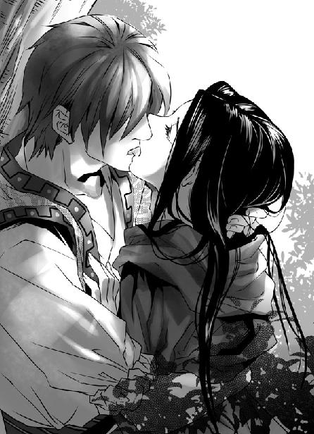
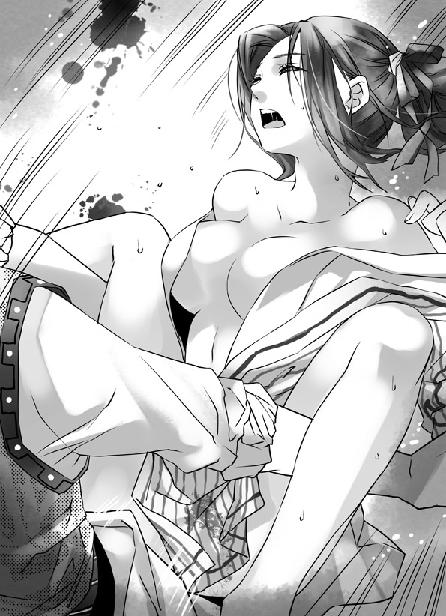

第27集·云中仙子
江州篇（3/7）
出版日期：2011-10-06
【本集内容简介】
借由云家牵线，程宗扬在筠州逐步搜购米粮，同时又是施粥以得人心，又是深入荆溪蛮地探勘。不料立足未稳，小紫和梦娘的惊人美貌已引来地头蛇的觊觎……
浮凌江南方的沐羽城传诵着“云中仙子现神迹”，程宗扬却怒上心头：一名拜过妓馆祖师、做过娼妓的贱奴也敢托称仙子！他正愁找不到施加焚血诀的始作俑者，如今得遇，岂能让其再次逃出自己的手掌心！
※ ※ ※ ※ ※
封面人物：申婉盈
彩插：申婉盈

插图：小紫

插图：申婉盈
筠州位于宋国西南，在宋国的政治版图中并不醒目，然而江州之战的爆发，使筠州成为西线军事运输的中枢，由临安运来的大批物资从沅水上岸，经陆路转运至筠州城南的仓库，再由民夫送往前线。
四百余里的路程和烈山的阻隔，使刘平军战败的消息对远在后方的筠州几乎没有影响，反而由于军资、人员汇集，市面愈显繁华，来自各地的输粮官、押运官、督军官不下数百人，一到午间，城中的酒肆便高朋满座，一片喧哗。
程宗扬凭栏而坐，对面是筠州布行的老板孙益轩，一个精干的中年人。
“接到云苍峰云三爷的吩咐，我用王团练的名义购了一处铺面，两日前已经安排妥当。”孙益轩道：“有心人想查铺面的底细，有王团练的招牌也不好查下去。”
“这个人可靠吗？”
“王团练是筠州本地人，管着筠州的乡兵。胆子大，敢捞钱，这些年与我们打过不少交道。”孙益轩笑道：“只要有钱可捞，就靠得住。”
“筠州那两家粮铺怎么样？”
“两家粮铺的老板都是殷实商人，做的也是本分生意。宏升粮铺老板姓马，上月刚过的五十大寿，日昌行的老板姓周，三十来岁，接掌粮行没几年。”
“他们手里有多少粮食？”
“宏升粮铺家底雄厚一些，每年进出都有几万石。日昌行规模虽小，仓中五六千石总是有的。”孙益轩顿了一下说道：“没想到公子来这么快，三爷筹措的本金还要两天才能到。公子若是急用，先从小的布行调用一笔。”
程宗扬空着手来的筠州，“你的布行有多少本金？”
“本金的出息有两千银铢，柜上寄卖的有五千多。本来年关要结清的，料想公子要用，小的已经推到明年。”
程宗扬笑道：“那我也不客气，先拿六千银铢来用。”
孙益轩恭恭敬敬说道：“三爷已经交待，一切听凭公子吩咐。”
程宗扬喝了口茶，“我记得筠州离沅水有两三天路程？”
“两三天到不了，到沅水码头快则五六天，慢则七八天。”
自己从晴州到江州的时候，和臧修他们一道走过这段路，用了三天时间，换成运粮的队伍，一天走七八十里已经很快了。
“干活的人好招吗？”
孙益轩笑道：“往年这时候人都回家过年，最难招募，如今前线在打仗，每日都有民夫往烈山去，回来时候有盘缠、口粮不足的，都聚在城外，每日总有几千人。一天的工钱一二十钱便够了。”
程宗扬心里默算，如果从宏升粮铺和日昌行购来一万石现粮，每石三百三十铜铢，加上到沅水四百里路程，每石添四十铜铢，合三百七十铜铢，时间要六天以上，再经水路运到仓储地，来回至少要半月。这样的效率实在太慢了。
秦桧道：“筠州附近似乎有条浮凌江？”
“秦爷倒熟知本地风土。”孙益轩道：“筠州在浮凌江上游，下游是宋国和昭南之间的蛮荒之地，称之为荆溪蛮。”
昭南是六朝之一，定都麟趾，由于地处蛮荒，一直蒙着一层神秘的面纱。浮凌江下游谷深林密，宋国曾在荆溪设立县治，但多年前早已废弃。
秦桧道：“不知是否能行船呢？”
孙益轩想了一下，“小的见过有荆溪的蛮人乘独木舟到城中交易。不过很少有人往浮凌江下游去。”
程宗扬立刻道：“会之，你去看一下浮凌江的水路，如果能行船，把所有能买的船只都买下来。”
水路的运输效率远胜陆路，如果能在浮凌江下游找到仓储的地方，用来转运粮食便无后顾之忧了。
敖润道：“我跟老秦一道！”
“好！”程宗扬道：“冯大法、老祁，一会儿咱们一起去拜会宏升粮铺和日昌行的两位老板。”
※ ※ ※ ※ ※
宏升粮铺马掌柜抱病在身，由他的管家出面接待。雪隼佣兵团已经派人先来接洽过，双方没费什么事就达成两千石的交易。按照约定的价格，一共是六千六百银铢，程宗扬痛快地拿出三千银铢，其余部分粮食入库后再行支付。
来到日昌行，掌柜周铭业亲自出来见面，听到这位年轻的公子哥儿一下就要买两千石粮食，不禁有些意外。
“两千石，敝行也拿得出。”周铭业道：“不过年关将近，时间只怕仓促了些。”
祁远道：“周爷说的是，敝东家也知道贵行有为难处，只要周爷备好粮食，我们自行搬运就是。周爷放心，粮价一文也不敢短的。”
周铭业连忙道：“两位这就见外了。这样吧，每石粮食再去十文，三百二十铜铢。”
程宗扬笑道：“石团长早说周老板仁义，果然不假。那就再添五文，明天我遣人前来搬运。”
周铭业一口答应，然后亲自添了茶，笑道：“公子快人快语，周某佩服。只不知公子为何索购如此之急？”
这位周老板年轻几岁，果然耐不住性子，语言间试着打探自己的底细。程宗扬道：“不瞒周老板说，敝处急需粮食。周老板手里只要有粮，在下全都要了，价钱好商量！”
周铭业倾过身，“公子需要多少？”
程宗扬一笑，“多多益善。”
周铭业道：“难道公子要上万石粮食？”
程宗扬微笑道：“周老板若有万石粮食，三万五千银铢立刻奉上。”
周铭业脸上不动声色，眼睛却微微一亮，过了会儿说道：“三万五千银铢，不是个小数目。不过如今正是青黄不接时节，过完年，粮价只怕还有波动。”
自己开出的价码比一般粮价已经高出五千银铢，日昌行一年的利润也不过如此。周铭业这会儿只是讨价还价，程宗扬道：“只要尽快拿到粮食，价格再高一成也可以商量。”
周铭业沉吟片刻，然后放下茶杯，“不知程公子何时要货？”
“越快越好。”程宗扬道：“十日之内最好。”
离开日昌行，祁远忍不住道：“程头儿，这个价钱着实高了些。如果是现钱交易，一般要降半成，何况这么大的交易，三万银铢日昌行也有得赚。”
“三枚银铢一石，日昌行顶多把库存的粮食卖给我们五千石，留一千石粮食应急。多出这几成，周老板就会想尽办法从其他粮商手里调粮。他做粮食生意，尽有路子，总比我们自己去买划算吧？”程宗扬道：“这点钱用不着省，就让他们去赚好了。”
祁远想了一会儿，也笑道：“他若真是十天之内卖我们一万石，看到后来的价钱，只怕连觉都睡不着。”
程宗扬一边看着筠州的街市，一边道：“铺面安排妥当，便挂出牌子，以每石四百铜铢向外收购，十天后涨到五百铜铢，先把筠州市面的余粮全部收尽，往后越涨越买。”
冯源在旁边道：“做生意我不懂，可买东西越便宜越好，干嘛要买贵的？”
程宗扬笑道：“所以这是做生意，不是买东西来自己用。有时占便宜，未必便好。”
冯源若有所思地琢磨了一会儿，“你这一说我倒想起来了。我祖师爷以前做过织机生意，也是吃了便宜好用的亏。”
“你们平山宗不是玩火法的吗？怎么还做织机的生意？”
“我祖师爷可是个人物。师父说，他上知天文，下知地理，点子多如牛毛，江湖上有个绰号叫‘工程师’。”
程宗扬脚下一晃，差点摔倒，“什么？！”
冯源讪讪道：“这名头确实不大响亮……我听着也觉得稀奇，有火法师、御法师、剑术师，还没听过工程师的。”
“接着说你那位祖师爷！”
程宗扬急切的声音倒让冯源怔了一下，挠了挠头道：“我没见过祖师爷，都是听师父说的。祖师爷说他是专搞什么……火箭的。程头儿，火箭你知道吧？”
程宗扬咽了口唾沫，“好像听说过。”
“就是弓箭上装个发火的器件，射出去冒一股火。”冯源道：“祖师爷就是专干这个的，可惜生不逢时，一身本领都没用上。”
程宗扬心里怦怦直跳，冯源不懂，以为是这个时代那种燃火的弓箭，但听在自己耳中，涵义就完全不同了。火箭工程师？比岳鸟人那个表贩子起码高一百多个档次，可怎么没听说过这个神人呢？连平山宗都没什么名声。
“你刚才说那位祖师爷做过生意？”
冯源说道：“那时候祖师爷四十来岁吧，想出来个点子，自己做了架纺纱的织机。平常一张纺纱机只能出一根线，祖师爷做的这架织机一次就能出八根线，又快又好。祖师爷给它起了个名字，叫珍妮机。”
好嘛，珍妮机都出来了。程宗扬追问道：“他做出了珍妮机，然后呢？”
冯源有些尴尬地笑了两声，“祖师爷不知道怎么想的，带着织机去找官府，说自己做出来的东西，不许别人做，要申请什么……”
“专利！”
“对！然后官府打了他一顿板子，把他赶出来了。”
祁远笑道：“这顿板子挨得冤了，自己上门找打的。哪儿有自己做了就不许别人做的道理？”
“他做的没错，只不过时候不合适，挨这顿板子也不算冤了。”程宗扬又问道：“后来呢？”
冯源道：“后来祖师爷就拿着织机去织坊卖。听说赚了点钱，新盖了房子，还讨了房老婆。”
程宗扬试探道：“你那位祖师爷没留下什么东西吗？”
“有啊！听师父说，祖师爷整天哪儿都不去，就窝在房里写东西，用的纸足有半人高。白天做织机，晚上就着油灯写，眼都快写瞎了。”
程宗扬压住激动的口气，“他写的东西在哪儿？”
“烧了。”
程宗扬差点跳起来，“烧了！”
“祖师爷刚过没两年太平日子，就被人打上门来。”冯源咧了咧嘴，“根子还在织机上，纺织的行当分纺线和织布两块，纺线的活以前都是各家各户纺好，再卖到织坊织成布匹。祖师爷做的珍妮机就是纺线机。后来越做越好，一张机器一次能出几十根线，织坊有了这机器，自己纺线，自己织布，渐渐的各家各户的线就卖不动了。两年下来，总有几百户人家日子过不下去，纺线的人家纠集了几百人，把各织坊的珍妮机都砸了，又找到祖师爷，把祖师爷痛打一顿，连房子也给烧了，一样东西都没救出来。”
祁远啧啧道：“这也太惨了。”
冯源倒想得开，“说实话，这事儿也怪不得人家。几百户的饭碗都被祖师爷砸了，能怪人家着急吗？后来祖师爷就洗手不干了，他眼睛不行了，年纪又大，改行收了两个徒弟，创立了我们平山宗。”
“你还有个师叔？”
“是啊。还没出师就疯了，整天说胡话，我小时候还见过，念叨什么验证量子空间的第十一个尾巴啥的。家里人把他接回去，后来就没听说了。”
“你师父还在吗？”
“死了十几年了。”冯源遗憾地说：“可惜门里就剩我一个人，今年也没办法给他们两位老人家上坟了。”
“什么时候去上坟，叫上我。”程宗扬道：“我去给你祖师爷点炷香，烧几张纸。”
“这可谢谢你了。程头儿，祁老哥，”冯源道：“这些事你们可别往外面说啊，传出去对我们平山宗不好。虽然平山宗就剩我一个人了，名声也要紧呢。”
祁远道：“这你就放心吧。不过你那位祖师爷运气可真够背的。”
程宗扬干笑两声。自己一直后悔没学理工，一肚子的废柴英文屁用没有，这会儿听冯源一说，心里说不出是庆幸还是失望。别说自己一个该死的文科男，正经的火箭工程师来了也是白饶啊。现代工业体系是成系统的，牵涉到无数学科，单靠一个人想在毫无基础的情况下改变这个世界，完全是作梦。
※ ※ ※ ※ ※
孙益轩安排的铺面并不大，前面是两间铺面，后面开了门，有个院子，两边是四大间充作仓库的厢房，里面有几间小房子，供人居住。地方虽然偏僻，出路倒宽畅。程宗扬前后看了看，觉得还算满意。
这时敖润也回来了，“江边有几艘船，都是打渔的小船，我问过渔夫，都说下游有礁石，除了蛮子的独木舟，没人能过得去。”
程宗扬大为失望，他本来想借用浮凌江运输，按老办法走陆路运到沅水，可要大费周章了。
“会之呢？”
“他跟一个来贩皮毛的蛮子攀谈上了。”敖润笑道：“看不出来，老秦文诌诌一个书生，居然通蛮语。”
死奸臣在南荒待了那么久，会蛮语一点都不稀奇。程宗扬道：“粮食我已经订下了，一共是四千石。”
敖润吓了一跳，“这么多？我瞧着咱们江州不缺粮啊。”
“不是给咱们买的，是给宋军准备的。”程宗扬笑道：“这四千石不够他们一天吃的。老四，后面的房子你看了吗？”
祁远道：“一共四大间，顶多能装五六千石。再多就要堆在院子里了。”
五六千石实在差得太远，看来仓储的事迫在眉睫了。程宗扬道：“先找些民夫搬过来再说。”
“成。”祁远答应一声，便出门去招揽民夫。
祁远刚走不久，秦桧背着几张皮毛回来。他这几张皮毛没白买，打听到的消息尤为详细。
“从浮凌江往下五十多里，江里便尽是礁石，只能容独木舟穿行。筠州曾在下面设过荆溪县，但几任知县都在江中触礁沉没，已经几十年没有人前去上任。这些年连乡兵也不再过去，不知道县衙还在不在。”
“五十多里……”程宗扬想了一会儿。如果能通航的水路有五十多里，在岸旁找个地方储放也未尝不可。看来得找个时候亲自走了一趟了。
说完浮凌江的情形，秦桧拿出一卷纸，“这是城南常平仓的营造图。”
“好家伙，大白天你就去知州衙门做贼？”
宋国州府都设有官营的常平仓，丰籴歉粜，用来平抑粮价。战事一起，筠州的常平仓成为军仓，各地运来的粮食都储藏在仓中。秦桧把常平仓的营造图拿出来，居心不问可知。
“现在先不要动，等我们手里拿够粮食再说。”程宗扬笑道：“冯大法，到时候就看你的了。”
冯源拍着胸膛道：“老程你尽管放一万个心！我冯大法出手，保证仓里一粒米都剩不下！”
“不用急。这一趟先探探路，要替宋军消费粮食，等过完年再说。”
秦桧放下营造图纸，笑道：“今天是腊月二十六，这个年要在筠州过了。”
程宗扬心里哀叹，本来计划来一趟谈定生意，自己除夕当天赶回江州，与小紫一起过年，看来要食言了。不知道死丫头会不会发脾气。
※ ※ ※ ※ ※
祁远开出一天三十铜铢的价码，找来的几十名民夫分外卖力，两天时间，四千石粮食已经运得七七八八。第二天中午，孙老板传来消息，云氏筹措的款项已经运抵筠州。
程宗扬正发愁怎么付账，闻讯顿时精神一振，立刻带着人出城迎接。不过看到押送的那几个光头大汉，程宗扬心里一沉，接着打起十二万分的小心。
果然，负责押送这笔巨款的正是云家大小姐，云丹琉。那些神情凶恶的光头大汉与孙益轩交谈了一下，便押运着十余驮骡马进入筠州城门，至于云大小姐本人，一看到接款的程宗扬，就两眼放光——只不过是能杀人的寒光。
自己不过是在公平赌赛中凭实力赢了她一套内衣，至于这么深仇大恨吗？程宗扬心里嘀咕着，脸上堆起笑容，客气地说道：“原来是云大小姐。大小姐居然没有出海，改走陆路了？哈哈，大过年的，让大小姐跑一趟，辛苦辛苦。”
云丹琉终于按捺住性子，没有拔刀相向，只不过一脸傲慢地扬起下巴，只当他不存在。
这么大一笔款项交接，应该是双方主事人出面，云丹琉却摆出一副不合作的态度。正当程宗扬下不来台的时候，队伍后面一人上前一揖到底，恭敬地说道：“清浦见过公子。”
程宗扬松了口气，“原来是林兄！你怎么也来了？”
“听说公子在筠州，在下毛遂自荐，随大小姐一同来拜见公子。”
程宗扬略一思忖便明白过来，笑道：“这是云老哥的意思吧？”
林清浦笑道：“实是云六爷的意思。不过在下毛遂自荐也确有其事。”
程宗扬道：“我说呢，云老哥怎么舍得让影月宗的高足来筠州？”
双方寒暄几句，气氛略显融洽，这边秦桧也上前对着云丹琉一揖到底，恭谨地说道：“年节将近，劳烦大小姐亲自出行，还请恕罪。”
玄武湖一战，云丹琉曾与秦桧照过面，对这个斯文儒雅的文士印象颇深，虽然对姓程的下流败类不假辞色，但对秦桧还看重几分，当下抱拳还礼，淡淡说了句：“不客气。”
这笔款项牵涉到几十万金铢，放到哪儿都是一笔巨款，安全起见，云家派出云丹琉亲自押送，无可厚非。只不过收款的是程宗扬，交接双方就有些尴尬了。
好在两位主事的虽然不大投缘，但程宗扬这边的秦桧、祁远都是能说会道之辈，敖润和冯源也是直肠子的热心人，再加上林清浦有意弥合，双方逐渐热络起来。
孙益轩是云家在筠州布的暗桩，不好公然出面，接洽之后，就先行离开，由程宗扬陪着众人一道入城。
筠州城比江州大了数倍，江州战事方殷，各地押运粮草、军械的司官都聚在城中，还不时能看到禁军的兵将在街头出没。云丹琉高挑的身材引来无数目光，但被她周围如狼似虎的恶汉一瞪，再嚣张的人也都打消了搭讪的念头。
忽然云丹琉轻轻“咦”了一声，勒住马匹，后面两位恶汉立刻围拢过来，护住大小姐。云丹琉道：“这时节怎么会有葡萄？”
路边放着两只藤条筐，里面盛着的葡萄已经卖去大半，售货的却是一个年轻的蛮人汉子。听到有人问讯，他便张开手，比了个五枚铜铢的价钱。
云丹琉跳下马，推开护卫的大汉，说道：“我问你，你这里有青葡萄吗？怎么卖的？”
她反复问了几遍，那蛮人只固执地张开手，也不知他是论斤还是论串。
秦桧道：“他是荆溪蛮，听不懂这边的话。”说着他蹲下来，流利地说了一串蛮语。
那个荆溪蛮人有些意外地看了看秦桧，然后回答几句，拨开表层，从下面找了几串还长在藤上的青葡萄出来。
秦桧解释道：“他说他们那里有个山谷，一年四季都有葡萄。这些青的还没熟透，不好吃，不要钱。”
“你居然会蛮语？”云丹琉对他刮目相看，然后道：“给他两个银铢，筐里的青葡萄我都要了，要带着藤叶的。”
随从拿出银铢，那蛮族汉子却不肯接。秦桧道：“他们从未使过银铢，有散碎的铜铢，给他一些便是了。”
随从换了一串铜铢，那汉子仍不肯接。云丹琉有些不耐烦起来，“给他就是了。”
秦桧说了几句，把铜铢递过去，那蛮人汉子点了点头，拿起铜铢便走。云丹琉气得笑了起来，“这做的什么生意？抢钱吗？”
“单买青葡萄他不肯要钱，买几串熟的，这些钱又太多了。我跟他说，这些葡萄我们全都要了，他便连筐都送给我们。”秦桧笑道：“借大小姐的光，大伙儿都能尝尝鲜。在下先谢过大小姐。”
云丹琉一笑，“你倒会办事。那好，把筐拿上，回去按人头分了，就当是我请你们吃的。”
程宗扬道：“原来大小姐喜欢吃酸的，连青葡萄都能入口，哈哈。”
云丹琉凤目扫来，火药味十足地爆了句粗口，“我爱吃什么，关你屁事！”
程宗扬错愕间，云丹琉已经吩咐手下，“把那些青葡萄都收好了，我要带回建康去。”
程宗扬邪恶地想道：这些青葡萄看着就倒牙，吃完还不酸死你！想着，他心里忽然没来由地突突跳了两下，她要带回建康？给谁吃呢？不会是给……吧？不可能！
程宗扬存了心事，无心再挑逗云丫头，一行人匆匆来到店铺，交接钱款。那些大汉把马背上的樟木箱子取下来，在库房内整齐地排成一列。云丹琉点了点头，为首的大汉拔出长刀，撬开封死的箱盖。
耳边传来几声压抑的惊呼，映入眼帘的是一片黄澄澄的金光。成叠的金铢码在箱内，每箱两万枚，重量超过二百公斤，一共十箱，仅黄金的重量就有两吨。
寻常人家一年的衣食，也不过十几贯钱，这二十万枚金铢，合四亿铜铢，足够养活上万户人家。头一次见到这么多钱，敖润和冯源都有点呼吸不畅，连程宗扬也觉得有点眼晕。
双方逐一清点数目，每交接一箱，都在交接的单据上按下指印。秦桧和祁远一道动手，仅清点数目就用去了两个时辰。云丹琉一直留在现场，监督双方的交接过程。当最后一枚金铢清点完毕，她拿过交接单，“啪”地拍上掌印，然后甩给程宗扬。
程宗扬决定不跟她一般见识，拿过单据，看到数目写的是“贰拾万”。程宗扬记得这是明代才推广的大写数字，不知道又是哪位先贤创造出来的。他在数目下签上名字，按好指印，交给林清浦。
秦桧满面春风地说道：“大伙一路跋山涉水，先找地方歇息。在下去筠州最好的酒楼包几桌席面，晚间一起乐乐！”
云丹琉板着脸道：“这地方待不得。走，我们回建康！”
她手下那些海盗汉子对女主人忠心耿耿，听到吩咐，也不顾路途劳累，当即牵了坐骑，返程回建康。
程宗扬对林清浦道：“走这么急，恐怕要在路上过年了。”
林清浦露出一丝苦笑，低声道：“云三爷的意思，本来想让大小姐在筠州过完年再回去。”
云苍峰的心思自己多少也能感觉一二，不过云丫头这脾气，自己实在是受不住。
“大小姐自己要走，我也不好拦，就是辛苦林兄了。”
林清浦笑道：“清浦来时，云六爷已经吩咐过，这几个月便留在筠州，听公子差遣。”
程宗扬喜出望外，“这可太好了！”
程宗扬在筠州，孟非卿在江州，云苍峰在建康，云家主事的六爷云秀峰在晴州，几方分居各处，单靠人马传信或者飞鸽传书，交流极为不便。有这位影月宗高徒在，他的水镜术就可以派上用场了。
程宗扬与林清浦已有日子未曾见面，因为灵飞镜的关系，双方交情非比寻常，程宗扬更是想拉拢他未曾得手，反而对林清浦平添了几分敬意。当下送走云丹琉一行，两人细谈了分别后的情形，程宗扬道：“我有些日子没回建康，不知五爷云栖峰可好？”
“还好。五爷官职照做，前些日子还升了一级。”
“我听云老哥说，广阳渠的事已经有了眉目？”
“尚书省的左民曹已经派员去广阳勘测，不出意外的话，一两年间就要动工了。”
程宗扬拉拉杂杂谈了一会儿，然后道：“这几日天气凉了，不知瑶小姐身体可好？”
林清浦一怔，“瑶小姐？”
林清浦参与过临川王的事，算是云家的心腹，竟然连他也不知道云如瑶的存在，云家对这位小姐还真是讳莫如深。
程宗扬岔开话题，说起与云六爷的联络。林清浦道：“云六爷目下在晴州，临行前六爷吩咐，公子办妥筠州之事，便请联络。”
程宗扬一口答应，心里却不禁想起那个披着狐裘的少女。云丹琉买的那些能酸掉牙齿的青葡萄，不会是给她小姑姑的吧？
※ ※ ※ ※ ※
“两千石粮食，一共是六千五百银铢，三千银铢的定金已经支付过，还差三千五百枚银铢。”程宗扬将一只解开的钱囊推过去，“这是一百七十五枚金铢，请周老板收好。”
看着钱囊中黄澄澄的金铢，周铭业神情微动，像粮行这种小本生意，平常升斗出入，大都是用铜铢，连银铢都不多见，何况是金铢，不由对这年轻商人的身家又高看一眼。
如果有选择，程宗扬宁肯用银铢支付，免得太过招摇。但二十万金铢换成银铢，足有几十吨重，等从建康运来，讨债的恐怕早就把自己的店铺踏平了。
“公子果然是信人。”周铭业接过那笔沉甸甸的金铢，然后笑道：“再过几日就是除夕，公子孤身在外，不若来舍下守岁，共度新年。”
程宗扬道：“那怎么好打扰？”
“你我之间，哪里要这般客气！”周铭业道：“不瞒公子说，这几日敝行上下都在库中忙碌，为公子筹措那一万石粮食。公子身边只有几位伴当，年夜未免冷清，何妨一同聚聚。”
周铭业如此盛情，程宗扬也有些心动，自己在这个时空第一次过除夕，如果身边只有祁老四、敖老大、冯大法和死奸臣，这年也过得太惨了点，于是笑着答应下来。
腊月二十八，筠州人家家户户开始打年糕，准备过年。城南一家新开的粮行不言声地挂出水牌，标出每石四百铜铢收购粮食的价码。
年关时节，各家多少都有些余粮，看到粮行挂出的牌子，有人过来询问，得知不论多寡，一律以现钱交易，便有人动了心，拿粮食来换些钱铢，购买年货。
祁远当起了掌柜的角色，通过孙益轩招募了几个信得过的伙计，开始收购粮食。冯源闲来无事，也跟着打打下手。
程宗扬把那笔钱铢交给敖润看管，把这个汉子吓了一跳，“程头儿，这可是几十万金铢。老敖不吃不喝，几十辈子也赚不下来。你就这么放心扔给我？”
“少废话，要是信不过你，我还带你来筠州？”程宗扬把钥匙丢给他，“我和会之出去一趟，明天回来。你和冯大法一起看着钱，下午孙老板来，拿一千金铢，让他想办法换成零散的银铢、铜铢。有事你和老四商量，自己拿主意。”
冯源道：“程头儿，不如我也去吧。守着这么大一堆金铢，我怕是连觉都睡不着。”
“别！”敖润一把拉住他，“留我一个人怎么成？冯大法，你小子也太不仗义了！”
祁远道：“我还是守着粮食安心点儿。这么多金子，老祁看着都眼晕……老冯啊，帮我揉揉肩，你昨天揉那两下，手法还真地道！”
程宗扬担心库房不够用，与秦桧一道往浮凌江下游，寻找地方储放粮食。浮凌江在城南，距常平仓不远，安顿了店铺的事，两人找了艘渔船，顺水而下。
起初一段顺风顺水，不到一个多时辰便行了四十余里。浮凌江并不宽，城边几里还有些农田，再往下游，地势逐渐变得崎岖，难以耕种，大片大片都是未开发过的原始森林。一个时辰之后，两岸山势更加险峻，树木也越发高大，虬结的根系一直延伸到水中，浓绿的树荫合拢过来，将江水映得一片莹翠，空气也湿暖了许多。
秦桧道：“这山看来也不甚高，只隔了几十里，气候便如此不同。”
程宗扬道：“可能筠州本身的地势就不低，再加上这几道山脉，冷空气都被挡在山北，无法南下。其实我倒想找个冷点儿的地方，粮食运来也好保存。”
说话间，船底微微一响，秦桧反应极为敏捷，船桨伸出，点住水下的礁石一推，停住船身。
程宗扬抬眼看去，只见平静的江水沿山脚拐了个弯，往下便翻腾起来，掀起无数大大小小的浪头，显然水下都是礁石。
两人小心地驾着船避开礁石，好不容易才靠到岸边。秦桧望了望四周，然后道：“那边似乎有些东西，我过去看看。”
程宗扬交待道：“小心点。”
秦桧束紧衣带，跃到岸上，几个起落便消失在密林中。
程宗扬守着渔船，盘算着在途中找处平地，用芦席搭个棚子，堆放粮食。反正自己也用不了几个月，只要能掩人耳目，转手便卖光了。忽然间，一条独木舟从下游逆水驶来，舟上一男一女，男子灵活地操着木桨，独木舟仿佛舞蹈一样左右穿插，轻盈地驶过礁群。
程宗扬看得瞠目结舌，这样操船的技巧，恐怕只有荆溪人才会，可他们的独木舟最多只能装载两三石粮食，就算能找来蛮人帮忙，四千石粮食也得搬运上千趟，更不用说计划中的几十万石了。
船上的汉子看到他的渔船，停下木桨，高声说了几句，程宗扬一个字都没听懂，只好张开双手摇了摇，表示自己没有恶意。
然后一个声音响起：“你是筠州的商人吗？”语调虽然生涩，但吐字清晰，却是那女子说的。
“没错，我是商人。”程宗扬道：“不过我今天没带货物，做不了交易。”
独木舟放缓速度，驶到渔船边。荆溪男子跳上岸，急切地说了几句。程宗扬听得糊涂，不过那男子的面目有些眼熟，好像在哪里见过。
接着那女子也上了岸，她穿着荆溪人喜好的白衣，耳下垂着一对白色的象牙耳环，虽然容貌略有差异，但皮肤白嫩如水，是个出色的美人儿。
“我叫相雅，他是麻黩。”那女子落落大方地说道。
程宗扬也想了起来，连忙说道：“我姓程，程宗扬。他是昨天卖葡萄的？”
荆溪男子说了几句，女子道：“麻黩认出你了，你是昨天买他葡萄的商人，我们正要去找你。”
程宗扬心里打鼓，这个荆溪汉子刚回去，又回来找自己，难道自己又惹什么麻烦了？
程宗扬笑道：“我们买葡萄，已经付过钱了。”
那女子认真点了点头，“你们给得太多了。我们正要还你钱。”
程宗扬听了半晌才明白，那个叫麻黩的荆溪汉子开价每串葡萄五个铜铢，并不是葡萄值这么多钱，而是荆溪人一般只数到五，再大的数字就用很多来表示。
云丹琉的随从给了他一吊钱，麻黩只知道很多，根本不知道有多少，等回来找到识数的一看，才知道给得太多了。两筐葡萄不过四五十串，足足多出几百铜铢。
麻黩被妻子数落了一顿，一大早就赶往城里还钱，没想到会在途中遇见买葡萄的客人。
这点钱程宗扬当然不肯收，但麻黩坚持要给。他们两个是荆溪土著，找都找不来的向导，程宗扬趁机比划着向他们问道：附近有没有宽阔平整的地方，可以搭棚子，并且地面不是太湿。
两人交谈片刻，相雅道：“如果你找能住人的地方，旁边有一处大房子。”
“大房子？”
“是呀。从前有人在那里住。”
程宗扬来了精神，“在哪儿？”
“我们带你去。”相雅和麻黩麻利地把独木舟拖到岸上，然后走进密林。
程宗扬在筠州听了不少浮凌江下游五溪蛮人的传说，据说那些蛮人擅长用毒箭，往往潜藏在林中，射杀过往的客商，劫掠财物。官府派出乡兵围剿也毫无作用，因为五溪蛮一半时间在山中劳作，一半时间出去打劫，简直是全民皆匪。以至于没有人敢往荆溪一带行商。现在看，可信程度基本上为零。
麻黩用随身的砍刀砍去枝叶，露出林间一条荒弃已久的小径。由于路面的泥土被夯实过，仍能看出以前的样子，如果稍微平整一下，就可以容骡马通行。
走了一刻多钟，一处房舍出现在浓绿的光影中。门庭虽然破败，青石铺砌的台阶和巍然耸立的门楼却有着不同于民居的威严。倾颓一半的屋檐下，悬着一方布满蛛网的匾额，依稀能看到上面四个墨黑的大字：荆溪县衙。
荆溪县治原来设在这里。程宗扬四处打量，只见墙头爬满藤蔓，四周的树木合拢过来，枝叶几乎遮满了天空。看情形已经很多年没有人迹，本来就不多的几间房舍都有不同程度的倾颓，好在结构还大致保存完好。周围近百里都只有荆溪蛮人，宋国居然能在这里设县衙，还派来几任知县，也真不容易。进入大门，程宗扬顿时一阵惊喜，完全出乎自己意料之外，院内的土地都用砖石铺过，虽然被雨水侵蚀，有几处凹陷，但依然平整，只要搭起棚子，立刻就能使用。
程宗扬正在院中打量，忽然人影一闪，有人从县衙的正堂出来，却是先来探路的秦桧。麻黩见到他，顿时喜形于色，拉着相雅过来，飞快地说了一串话。
秦桧也认出他来，双方说得高兴，眼看天过午时，秦桧拿出携带的竹筒米饭和一只酒葫芦，邀这对荆溪夫妻一同用餐。就这样，秦桧和相雅用蛮语与麻黩交流，再用官话与程宗扬交谈，四人一边聊天，一边打听荆溪县衙的情形。
麻黩与相雅对县衙的来历也所知不多，只知道很多年前曾有人在这里居住，那些人都是凶恶的坏人，拿出一张盖过红印的纸，就向周围的山民索要物品。从未交过赋税的荆溪人对此莫名其妙，彼此发生过几次冲突，最后干脆都躲到山里不去理会。后来有一天，荆溪人从山里出来，才发现大房子的人已经搬走了。荆溪人不喜欢这种房屋，也没有人来住，于是便荒废下来。
秦桧问起有没有乡兵到这里来。麻黩和相雅说，他们不知道什么是乡兵，不过由于水路和山路都不好走，已经很多年没有外人到荆溪来了。
程宗扬放下心来，从筠州到这里，顺风的话一个时辰就能到，地方又大又没有人烟，把粮食放在这里倒是个好地方。
吃过饭，麻黩和相雅一同离开。这对荆溪夫妻一片坦诚，只因为多拿了几百文钱，还要划船到城里送还，让自己这个准备囤积居奇的奸商很有些不好意思。
程宗扬有心送他们点礼物，但身边什么都没带，只好作罢。
秦桧道：“他们这支荆溪蛮住在山上，出来一趟要走几十里山路，再走几十里水路，以前很少与宋国人接触。”
“那个女的官话说得不错啊，以前没接触过外人，她在哪儿学的？”
“浮凌江再往下游临着昭南边境，有一个沐羽城，虽然比筠州离得远，但荆溪人对宋国人抱有戒心，大都在那边交易。麻黩还是第一次去筠州，正巧遇上我们。”
“下次来，给他们带点铁器和盐巴。”
秦桧点头道：“那最好不过。”
程宗扬在庭中走了几步，“若加个棚子，放上几万石粮食应该没问题吧？”
秦桧已经用脚步丈量过，当下说道：“庭院南北宽十丈，东西宽十二丈，如果加上一丈高的棚子，能盛放粮食近十万石。”
再加上周围的房舍，满打满算能盛放二十万石，虽然简陋得不像粮仓，但自己只是找地方堆放粮食，又不打算长期仓储，这里也尽够用了。
程宗扬道：“招些民夫，把库里的粮食运出来，棚子先搭成一丈五高，留出通风的空间。就用芦席和竹子，只要能挡雨，越简单越好。”
“从浮凌江运送粮食，只怕不好掩人耳目。”
“这就看王团练的了。给他送笔银铢，份量要够，也不能觉得咱们是好宰的肥羊，让他照应一些。”
秦桧笑道：“这个好办。”
※ ※ ※ ※ ※
程宗扬与秦桧查看了县衙周围的环境，规划了要修整的道路和库房，第二天才返回筠州。
“昨天收了二百石粮食，还是城南一个大户派管家送来一百多石。”祁远面有忧色地说道。这个数量虽然不少，但离家主的目标差得太远。
程宗扬笑道：“这才是第一天，不用急。老四，眼看就要过年了，有什么打算？”
祁远道：“就咱们几个人，我去弄口肥羊，买些年糕、点心。里头再挂几盏灯笼，喜气一些，也尽够了。”
程宗扬摸着下巴道：“是不是简单了点儿？”
祁远笑道：“再每人封一个大红包，就丰厚得紧了。”
程宗扬大笑起来，“好你个老四！把铺里几个伙计，都列出名单来，按筠州的行市加一倍。至于咱们几个，喂，老四，我记得你还是股东吧？”
“那是，我和吴大刀占了半成多呢。”
“一成。”程宗扬道：“小魏那份算你们的。”
祁远不再言语，过了会儿才道：“老秦，雪隼团两位，还有林先生。封多少的红包合适？”
“每人一百银铢。”程宗扬张开手臂，做了几个体操动作，然后道：“其实我还有个想法，不过要辛苦你了。”
“我天生的劳碌命，有什么辛苦的。程头儿，你说，我记着。”
程宗扬道：“听说城外还有民夫没有着落？”
“足有两三千人，都在常平仓一带聚着。”
“我有个打算，设个粥棚，施粥。”
祁远眼睛一亮，“这可是个积德的好事！我来干！”
“问题是得多少粮食？我怕施到一半不够了，丢了咱们商行的面子。”
“施粥当然不能敞开了吃，每人每天两顿，有一斤半便够了。两三千民夫，再加上城中无钱的穷人，就说有四千人，一天是六千斤粮食，合五十石，除夕开始到初五，六天一共是三百石。每人每天两个钱的菜蔬，算下来要五百银铢。”
“那就设到十五。最多也就是一千石的粮食，菜金按两千银铢来。”
“成！”祁远道：“搭粥棚的事不用操心，我去说一声，一两个时辰就搭起来了，我先去叫几个人准备粮食。”
祁远兴冲冲往外走。孙益轩领着两个小厮，提了几只食盒进来。
孙益轩是云家在筠州布的暗桩，明面上不好多打交道，这次说的事是王团练初七要在家中请客，已经派了请帖。
孙益轩道：“王团练这人，手伸得太长，每年三节两诞，都少不了让城里的商户孝敬。”
“给多少合适？”
“一般是一百银铢。”
“一年五次，就是五百。城中商户起码有几百户吧，王团练这比做生意捞得还狠啊。”
“他手下有乡兵，又是官场的人，在筠州没人敢惹。被他勒索几个，大伙儿也只当求个平安。”孙益轩道：“况且他手伸这么长，有些事情也好办。”
程宗扬想了想，“我不能在这儿待太久，让店铺的祁掌柜代我去吧。”
“行。”孙益轩道：“请转告祁掌柜，初七一早，城南王团练的大宅。”
※ ※ ※ ※ ※
第二天便是除夕。筠州城南，一连十余座圆形的大仓沿着浮凌江一字排开，便是筠州城的常平仓了。
为了往前方输送粮食，宋国动用的民夫不下二十万人，大部分都由各地官员调集，服完劳役就带着口粮各自返回。但二十万人里面，免不了有些因为各种原因滞留在筠州，无法返乡。这些民夫缺衣少食，当地官员虽然想尽办法赈济，但现有的人手既要维护城中的秩序，又要支应前线各种物资，实在也顾不了许多。
大清早滞留的民夫就聚集在江边，希望有运气到城中打份短工，赚得一天的衣食。但时近新年，各处商铺都陆续关门休业，城中居民各自忙着过年，这份希望也渺茫得紧。
忽然人群一阵骚动，一个管家模样的瘦削汉子骑着一匹大青走骡过来，扯开喉咙道：“有干活的，过来几个！”
人群一下围了过去，七嘴八舌问道：“老爷，要几个人使？给多少工钱？”
“一文钱都不给！”祁远道：“程家少爷要在这里施粥，找几个热心的，搭处粥棚。”
人群沉默片刻，然后爆发出一片叫好声。几十名汉子立刻出来，清出一片场地，拆了各人住的芦棚，七手八脚搭起一处粥棚。
接着几名前几日被招募去的民夫扛着盛满粮食的蒲包过来，祁远从民夫中挑了几个老成持重的，在棚前支起大锅。这边已经有人拾了柴火，汲了水，冯源也跟来凑热闹，见状不禁技痒，露了手隔空取火的功夫，所幸这次没出丑，把围观的众人给狠狠震了一把，连同行的林清浦也赞不绝口。
那位姓祁的管家看起来不像善类，却是一副热心肠。他前后照应着，让人一通大火把水烧开，然后扯开蒲包，将白灿灿的大米倒入锅中，一边熬着粥，一边摆开桌案，将做好的菜蔬一盆盆抬过来。虽然都是白水煮成，缺酱少料，但贫寒人家平常吃用也不过如此，顿时又是一片欢声，连帮忙干活的那些民夫也大有面子。
民众越聚越多，这几千民夫不乏精壮有力的汉子，一旦踩踏起来，便酿成大祸。祁远先叫人把没开过的蒲包堆起来，让众人都看到粮食充足，不用争抢，然后让众人按各州县分好，老弱在前，精壮在后。等粥米煮熟，祁远亲自掌勺，每人一碗粥，一勺菜，公平分配。冯源好凑热闹，林清浦也没什么架子，三人一起前后奔忙，顺顺利利把施粥的事办了下来。
那些民夫感激不尽，交头接耳都在说：“程公子施粥，祁大管家掌勺，善心人有好报啊！”
这边正闹轰轰地施粥，恰逢筠州知州滕甫出城探视。远远看到这一幕，滕甫驻马审视良久，然后捋着胡须对左右道：“这个姓程的倒是义商！设棚施粥也颇有章法，筠州民风淳厚，民心可用！”
几名随行的本地官吏唯唯否否，心里却在纳闷，筠州何时出了一个姓程的大商户，不言声就设起粥棚来？
滕甫本来想派几名衙役帮忙维护秩序，转念一想，那些差役成事不足、败事有余，谁知道会做出什么勾当？他索性道：“吩咐衙门的人，施粥是善事，谁都不许打扰！交待常平仓的班头，从官库中支一百石粮食送去。让他看好仓户，小心火烛。仓里几十万石军粮，一旦失火，可不得了。”
祁远一直忙到午后，官仓送来一百石粮食，倒把他吓了一跳。弄清原委，祁远连声道谢，又给班头塞了一小串茶水钱，让班头高高兴兴走了。
下午程宗扬也来凑热闹，看到祁远把事情办得井井有条，民夫们多少都能吃上热粥热菜，一个个感激不尽，不由笑道：“老四，你这人情做得不坏啊。我怎么看着里面还有穿号衣的人呢？”
祁远拍打着身上的烟灰，笑道：“那是常平仓看守的乡丁，他们守着仓房，吃得还不如咱们的大米白粥。上午还拿架子，只远远看着。中午有两个过来，我给他们盛了份稠的，这会儿就都来了。这些乡丁还行，都老老实实排队，没有仗势欺人的。说到底，也是穷苦人家出身。”
“既然这样，从城里再送些菜来。除夕夜，让大伙敞开吃顿好的。”
祁远答应了，又说起筠州知州派人送来粮食的事。程宗扬道：“这官儿倒不坏。”
“可不是嘛。”祁远道：“班头来的时候我还担心。有些官府自己不施粥，还不让别人施粥，扣上一个聚众滋事的帽子就不得了。就是官府施粥，也是自己设棚子，从未见过拿来粮食给别人施粥的。”
程宗扬想了一会儿，“你打听一下，如果有别的情形，索性纳了钱，这一百石粮食算咱们买的。”
“成。我一会儿去找常平仓的班头，摸摸底细。”
程宗扬打量了他一下，笑道：“明天再说吧。你也忙一天了，从民夫里面找几个可靠人看棚子，回去换身衣服，咱们一同去日昌行周老板家。”
祁远提醒道：“程头儿，不适合吧？”
程宗扬笑道：“你放心，这位周老板是个认钱的人，财神爷要上门，他高兴还来不及呢。”
祁远也笑了起来，“这倒是。和财神爷攀上交情，这年过得也值。”
秦桧负着手，潇潇洒洒从江边过来，说道：“常平仓后面有个河湾，地方僻静。船只也不用太大，有个七八艘，每艘能装百十石即可，都用渔船，在江上也不显眼。一趟能运千余石，一天走三四趟，便将库房清空了。”
程宗扬点了点头，“先这么做，以后量大了，再想办法。”
祁远找了看守粥棚的人手，告诉他们今晚粥棚一直开到子时，让这些流落异乡的人都守完岁再封火，然后唤上冯源和林清浦，众人一同回到店铺。
敖润大马金刀地坐在库房前守着，见到程宗扬，立刻蹿了起来。
程宗扬道：“老敖，你这表情怎么这么古怪呢？”
敖润过来贴在他耳边小声道：“姨奶奶来了。”
程宗扬讶道：“哪儿来的姨奶奶？”
“你那小姨，刚从江州来！”
“死丫头！”程宗扬把手边的事一下全抛到九霄云外，大叫一声，撒腿朝后面的厢房奔去。
小紫穿着一袭锦袄，由于是冬季，襟口和袖口镶了一道狐毛，白绒绒的狐毛衬着白玉般的面颊，就像一个精巧的玉人。她双手抱在胸前，俏生生倚在门边，唇角挑起，一副似笑非笑的表情。
程宗扬冲过去张开双臂，还没沾到小紫的身子，就惨叫一声：“哎哟！”
小紫在他脚背上狠狠踩了一脚，程宗扬顾不上喊痛，抱着脚一边跳一边叫道：“你怎么来了？谁陪你来的？哎呀，我的脚……”
身后一个粗豪的声音道：“公子！”
程宗扬扭头一看，不由大喜过望，“长伯！彪子！哈，是你们两个！彪子，你气色看着不错啊！长伯，听说你被一个和尚打伤了，你行啊，脸都丢到天竺去了。”
吴三桂“嘿嘿”笑了两声，“那次是我大意。下次让我撞见那秃驴，非把他的光头凿个洞出来！”
易彪比刚从北府兵出来时精神好了许多，“我和老吴接到公子的书信，就赶往江州。到地方才知道公子来了筠州，一路紧赶慢赶，总算及时赶到。”
程宗扬开怀笑道：“真是太好了！跟老四他们说一声，给周老板告个罪，今晚就不去叨扰了，咱们自家兄弟一起守岁！”
吴三桂和易彪一笑，到前头和祁远等人见面。程宗扬转身抱住小紫，先狠狠亲了一口，“死丫头，想死我了！喂，你不用闻了，这几天我忙得跟狗一样，什么女人都没碰过！”
小紫哂道：“好没用哦，来了这么些天，连个女人都找不到。”
“那些庸脂俗粉，跟你一比，让人一点心情都没有。你说都是女人，为什么差别这么大呢？天底下女人那么多，哪儿有像我的死丫头这样，又香又甜又水灵的。”程宗扬一边说，一边把脸凑过去，“再亲一个。”
小紫抬起小手，把他下巴拨到一边。
程宗扬扭过头，才发现屋里还有一个人。那女子坐在一只箱子旁边，这会儿款款站起身，体态丰润，风姿秾艳，正是自己从黑魔海囚牢带回来的梦娘。
“原来是梦娘，看起来又漂亮了啊，哈哈！”
“阿梦，”小紫娇声道：“那边有香蕉，你吃一个吧。”
梦娘含住香蕉，白色的蕉肉在她美艳的红唇间来回进出，渐渐变得湿润。她吞吐的动作温柔而细致，艳丽而柔润的唇舌优雅地舔舐着，充满性感的风韵。
程宗扬惊奇地说道：“哇，她竟然这样吃香蕉？好奇怪啊，是你教的吗？”
“谁知道哪个傻瓜教的。”小紫笑吟吟道：“人家只教过她用下面的小嘴吃香蕉，程头儿，你想不想看啊？”
程宗扬苦笑道：“不用了吧？好啦好啦，我只是逗逗她，又没干别的，不信你问她。”
“我才不问呢。”小紫笑道：“我一会儿告诉她，再吃香蕉，最后一口用力咬就是了。”
“死丫头，你也太坏了！”程宗扬抱着小紫道：“萧五和臧修怎么没来？”
“他们有事，走不开。”
“宋军攻城了吗？”程宗扬急忙道：“情形怎么样？”
小紫撇了撇嘴，“我才不管呢。”
※ ※ ※ ※ ※
江州城外，一名老将在数十名将领的簇拥下，正举起单筒望远镜，注视着城前六座堡垒。他已经年过七旬，一丛白须长近尺许，在颌下随风舞动，曾经名动军中的夜眼，此时也要借助望远镜才能看清堡垒的构造。
战鼓声“隆隆”响起，数千名披甲戴盔的步卒分成前后相错的十个方阵，在轒輼车的掩护下，正逐步逼近江州城门。
这次投入进攻的是两个军，一共十个营的兵力。队列最前方的轒輼车呈长方形，长丈许，宽五尺，车身用原木制成，下面安装有两排木轮，外面蒙着一层坚硬的皮革，为了防止火烧，还涂了一层厚泥。车顶三角状拱起，以抵御城头抛下的滚石擂木，又称为尖头木驴。
这种冷兵器时代的装甲车专门用于接近敌方城墙，车内可以容纳十余名全副武装的军士。一旦接近敌方城墙，军士依靠轒輼车本身的防护，破坏城门或挖掘地道。由于数日前的金明寨大火，军中积累的木料和攻城器械一焚而空，宋军仓促间只能做出几十辆轒輼车，云梯、巢车、望楼之类的攻城必备利器只能付之阙如。
就在程宗扬抵达筠州的同一天，夏用和的旗号也在金明寨上空出现。他是捧日军主将，同时也是此次江州之战的前线最高指挥官，负责指挥捧日、龙卫二军近十万军队。
宋军还没有开始攻城，就接连遭受重挫，捧日军左厢都指挥使刘平惨败，右厢都监李士彬被刺，让这位军中宿将深感棘手。一到金明寨，夏用和就毫不停歇地召集诸将，商讨之后，决定立刻攻城。
负责进攻的是捧日军左厢第五军和右厢的第三军。第五军指挥使郭志高把军队分成前后两部，两个营在前，在六辆轒輼车的掩护下接近江州城，其余三个营在后，用弓弩攻击堡垒和城头的敌寇，掩护攻城的同伴。
箭支雨点般飞上堡垒，铁制的箭头射在城堞上，发出“噼噼啪啪”的声音。每座堡垒都有一个班的军士驻守，他们对宋军的箭矢毫不在意，也没有浪费体力和箭矢去还击，直到轒輼车接近到十几步的位置，两名军士从城堞上探出身体，用木盾挡住箭矢，接着中间一名军士两手搬起石块，振臂掷出。
石块呼啸而下，重重砸在轒輼车上，车身猛然一震，车顶的尖脊承受住重石一击，一侧的车轮却陷入泥土，速度停滞下来。周围的军士一拥而上，用力将轒輼车从泥地中推出。
忙乱中，都头朝堡垒上看去，立刻大叫道：“避开！避开！”
又一块巨石从高处抛下，这块巨石足有牛犊大小，“轰”的一声正砸在轒輼车正中。再坚固的车身也无法承受如此强烈的冲击，车下几只木轮迸射出去，涂过泥土的尖脊被砸穿一个大洞，鲜血立刻从车内溅出。几名幸存的军士从车中惊惶地奔逃出来，随即被头顶飞来的箭矢射倒。
轒輼车已经完全丧失行动能力，这时堡垒上的军士才操起弓，居高临下，在十几步的距离内逐一射杀奔逃的宋军。都头拔出刀，大声指挥着军士举盾结阵，抵御堡垒的袭击，但紧接着就被一只利箭射穿肩膀。他惨叫着坐倒在地，腰刀飞到一边。周围的宋军拖起他，匆忙撤退，但把后背暴露给敌人的结果，只能是伤亡迅速增加。
星月湖的军士用木盾彼此掩护，几名射手轮流开弓，不断有宋军在他们的箭下跌倒。
这些堡垒正挡在进攻城门的路线上，如果弃而不顾，只会让进攻一方陷入腹背受敌的境地。第五军指挥使郭志高面无表情地发出旗号，数辆轒輼车同时聚拢过来，呈半月形围向最前方那座堡垒。
但很快，郭志高就发现自己作出了一个错误决定，那座堡垒虽然在最前方，但距离紧邻的三座堡垒都不过六十步的距离，两个在侧后，一个在右侧，彼此相互呼应，将堡垒的三个方向都覆盖在射程以内，只剩最前方的进攻后顾无忧。而堡垒的面积极窄，数辆轒輼车挤在一处，根本无法展开。
不多时，又有两辆轒輼车还没有贴近堡垒，就在行进过程中被击毁。敌寇的攻击手法如出一辙，先用中等石块砸中轒輼车一角，趁受创的车辆移动缓慢，再用巨石重击，直接摧毁车辆，最后再用弓箭射杀逃奔的士卒。
郭志高也是久经战阵的将领，但他从未见过如此有条不紊、精准如教科书般的攻击方式。一般在战斗中，攻守双方都会犯下许多错误，毕竟刀枪无眼，搏杀中双方都承受着巨大的压力，而军士的性格、能力和素质更是千差万别，即使经过严格的训练，与如臂使指那样顺畅的指挥仍相距甚远。像这种精确的配合，只有一种可能性——这些敌寇并非流寇，不仅有丰富的战斗经验，而且共同作战多年，相互间默契无比。
郭志高判断，堡垒上的敌寇很可能是雇佣兵。据说敌寇中有大批雇佣兵，而佣兵中出色的作战小队并不罕见。
郭志高十年前才加入宋军，作出这样的判断并不奇怪。在后方观战的夏用和却完全是另一番感受，他握着镜筒的手掌稳如磐石，心里却掀起了滔天巨浪。
已经过了这么多年，那个人的星月湖大营居然又重现于世。难怪贾太师如此担心，不惜牛刀割鸡，动用十万禁军精锐去清剿几千匪寇。星月湖大营的名册一直秘藏在太尉府，作为少数几个看过这份簿册的人，夏用和对星月湖大营的了解远比其他人来得深刻。他们隐身十余年，却选在此时出现，也许是不想让自己平平安安退隐吧。
一辆轒輼车终于逼近堡垒，车头紧紧顶住堡身。接着坚固的水泥壁上传来震动，躲藏在轒輼车中的宋军正用铁锄凿击堡身。这辆轒輼车分外坚固，堡上投下的巨石都被弹开，车身虽然伤痕累累，仍然保持完整。
车内的宋军用鹤嘴锄凿击，才发现碰上了硬家伙。一般城墙都是用烧制的城砖砌成，虽然砖缝用细澄泥甚至是糯米浆作为黏合剂，但用鹤嘴锄凿击并不难，有经验的甚至能将整块的城砖掏出。可面前的堡垒却是浑然一体，力气小些的，锄在上面只留下一个白印。即使拼命去凿，也不过留下一个寸许深浅的凹痕，通体竟然找不到一道缝隙。
忽然头顶“呼”的一声，一条点燃的棉被抛了下来，盖在轒輼车上。棉被早已浸过桐油，火势分外强烈。虽然轒輼车上涂抹着泥土，没有起火，但车内的空气迅速弥漫着烟火气，只过了片刻，车内的军士就不得不逃散出来。
被击毁的轒輼车阻塞了宋军的攻击，他们不得不向后退却，等待轒輼车被烈火烧完。几座堡垒飞来的箭矢不断射入人群，即使宋军竭力用盾牌掩护，仍不断有人中箭。好在大多数人都伤在手臂和腿部，暂时不至于致命。
捧日军左厢第五军进攻的同时，右厢第三军也进入战场。他们避开了堡垒，选择的是江州城墙，但城墙的防御比堡垒更加完善，除了角楼和城墙上的滚石檑木，吊在墙外的悬楼更是发挥了巨大的作用，那些敌寇在悬楼中专门攻击宋军的侧面，尤其是轒輼车的木轮等要害。接连有四五辆轒輼车被火箭射中木轮，在战场上熊熊燃烧。
几辆轒輼车好不容易靠近城墙，还没开始攻城，就被等待多时的敌寇用巨石砸毁。宋军的进攻手段逐一受挫，前方的军士不得不狼狈撤回，只有后方掩护的弓手还在放箭，最后演变为双方对射的局面。
右厢第三军负责攻城的军士陷入太深，进攻时还有轒輼车掩护，回撤时两个营的军士都暴露在敌寇的弓箭下，伤亡大增。一名营指挥使被箭矢射穿大腿，无法行走，周围的军士过来救援，城上的箭矢却像长了眼睛一样，专朝他们的大腿疾射。
下面的宋军看得清楚，放箭的是一个白衣金冠的贵公子。他下手狠辣之极，射倒了那名营指挥使，却不取他性命，反而用他当诱饵，引得周围宋军来救，再把他们一一射倒。不多时，那名营指挥使周围就有十余人受伤。
那名营指挥使见状大喝道：“忠义报国！就在今日！”说着拔出佩刀，反手朝颈中抹去。
“叮”的一声，一支羽箭射来，正中刀柄，将他手背一并射穿。
城上的贵公子挽弓笑道：“也算条汉子，今日就放你一条生路吧。”他声音并不高，隔着数十步的距离却听得清清楚楚。
营指挥使怒骂道：“死贼寇！裹胁民众，据城作乱！江州城弹丸之地，我十万大军一日可下！”
贵公子怫然变色，“什么贼寇！我是堂堂正正的江州刺史萧遥逸！本刺史身为朝廷命官，守土有责！你们这些宋军敢犯我大晋边境，才是贼寇！”
营指挥使叫道：“你们这些贼寇割据造反，王丞相向我大宋借兵平叛，我军才秉义出师。”
“文书呢！”萧遥逸毫不客气地说道：“王老头是给你们姓贾的狗官递过国书，还是写过私信了？”
营指挥使怔了一下，然后叫道：“你敢说城中没有贼寇！”
“我萧家爵为列侯，官封大将军，开府建牙本是分内职权！”萧遥逸抬手一指，“这些人不管以前是做什么的，如今都是我大晋官兵，哪里有半个贼寇？”
晋国的大将军相当于宋国的节度使，可以开府建牙，自辟僚属。就算真是贼寇，这会儿也是被晋国招安的官军。
萧遥逸得势不让人，“我大晋精兵数十万，强将数千员，什么时候要向你们借兵？拿嘴说说就算证据？那好，明天我率兵打到临安，还是你们那位宋主娃娃求我的呢！”
夏用和放下望远镜，“鸣金！”说着打马而回。
锣声响起，宋军潮水般退却，在堡垒射程外整队撤军。萧遥逸正骂得痛快，见宋军撤退，一脸不甘心地叫道：“别急啊！怎么还没开始打就跑了！宋国上四军的捧日军，难道都是小娘儿吗！”
宋军充耳不闻，只派出一队戴着白毡帽的军士救回战场上受伤的同伴。这次进攻只是试探，结果不出所料。江州城虽小，但没有巢车、望楼和云梯，缺乏攻击手段的宋军甚至连城墙都摸不到。
萧遥逸心里也不像他表面看起来那么轻松，宋军浅尝辄止，避免了更大的伤害，下次进攻，必然是倾巢而来。只希望程宗扬能尽快赶回，大家齐心合力，在好水川给宋军一个狠的，重挫宋军士气。
※ ※ ※ ※ ※
筠州城内，新开张的程氏粮行大门紧闭，院内却灯火通明。孙益轩盘下的铺面是常见的前铺后院格局，这会儿几间仓房都堆满粮食，里面的厢房面积狭窄，无处落座，众人索性在院中点起篝火，将祁远买来的肥羊架上。
敖润走南闯北，烤羊炙肉是把好手，手艺连祁远都比不过。他看着火候，一面来回转着开过腔的羊只，一面抹上酱汁盐末。冯源剥了蒜，在舂中捣成蒜泥，再加上酱料，一碟一碟放好。
吴三桂随身带的一罐蜂蜜，这时也派上用场。敖润和他一见如故，一边烤着羊肉，一边吹牛，说自己当年押一批货远赴塞外，一道蜂蜜烤肉，让番邦的首领吃得连舌头都险些吞下去，差点儿就把他招了番邦驸马。
仓中有的是盛粮的蒲包，易彪取来往地上一铺，再盖上毯子，放上靠枕，便成了座位。四周檐角挂满灯笼，祁远早已备好了果蔬酒品，秦桧去酒楼借了几张桌案过来，和林清浦一道整治席面。
虽然诸事都是自己动手，大伙儿兴致却是极高。程宗扬别的不在行，干脆拿了只锅，加油烧到滚热，然后把整鸡、面点放进去炸。六朝油炸食物不多，见到他这样的做法，都觉得稀罕。程宗扬得意地说道：“油炸桧你们没吃过？会之，你别笑，油炸桧油炸桧，炸的就是你！”
秦桧笑道：“有道是烈火烹油，鲜花着锦！秦某的桧字经此一炸，必定是余香满口，令人回味不绝。”
“奸臣兄，真有你的。都下油锅了，还一套一套的。死丫头，你来尝尝，味道不错吧？”
小紫披了条织锦的披肩，坐在篝火旁，梦娘侧身偎依在她身后，好奇地看着眼前热闹的一幕。刚炸过的鸡腿带着焦香的气息，撕开来，里面的鸡肉却是白滑香嫩。小紫撕了一片递给梦娘，梦娘小心呵着气，吹凉了才放入口中，然后道：“很好吃呢。”
“让让！让让！”祁远捧着一只热腾腾的汤盆出来。
众人一边让路，一边道：“老祁熬的什么汤？味道还挺香。”
“鱼羹！年年有余嘛。年夜饭少不了要上道鱼。”祁远道：“蒸的年糕马上就出锅，一人尝一块，节节登高！”
秦桧接过汤盆，笑道：“老四这一套一套的不比我少。”
“我这都是俗套，讨个口彩，好日子，吉庆！”祁远放下汤盆，吹着手指又往厨房跑，“你们先吃着！还有几样菜蔬，现切现炒，一会儿就得！”
程宗扬道：“别麻烦了。干脆的，把锅架火上，大家吃火锅！彪子，你不是玩刀的吗？给你个活儿，把厨里的牛羊肉都切成薄片，越薄越好，比纸厚的我可不要！”
祁远道：“纸那么薄？一炒就酥，还怎么吃啊！”
“一瞧你就是个没吃过涮锅的土狗，一会儿你就知道了。冯大法，你昨天还跟我吹牛能定火，火候的事就交给你了。火头要正好开锅，不能大也不能小。”
冯源一边捣着蒜一边煞有介事地点了点头，“瞧我的吧！”
“长伯，你去拿酒。老四跑了半个城都没买到烈酒，还好筠州这边酿的黄酒不错。拆泥封的时候小心点。”
“成！”吴三桂答应着去厨房拿酒。
“清浦！”
“在。”
“素菜交给你了。量不必多，要几样新鲜的。”
林清浦笑道：“厨中有新采的莲藕，便蒸一道甜藕，再加上青菜、蘑菇，也尽够了。”
程宗扬一个一个吩咐，然后道：“会之……”
秦桧左右看了看，“好像就剩吃的事儿了。”
程宗扬道：“干脆你给大伙唱一曲吧。”
众人大笑声中，秦桧双手一摊，叹道：“惜乎座中无妓。”
众人又是一阵大笑，敖润喘着气笑道：“要不我去城里看看，哪家园子没关门，给老秦找一个来。”
“除夕夜还招妓，你们有点品德好不好？”程宗扬道：“当心！别把汤锅泼了！”
众人七手八脚忙碌着，不一会儿诸物齐备，程宗扬拿筷子挟起肉片瞧了瞧，“彪子行啊，有你这手艺，到酒楼给大厨当下手光切菜，一个月也能挣十来个银铢啊。”
几大盘牛羊肉厚薄均匀，挟起来一片，看上去几乎透明。众人一阵叫好，易彪“嘿嘿”笑了两声，抓了抓脑袋。
这会儿鱼汤烧得正滚，锅中犹如沸雪，程宗扬挟起肉片放在锅中，往汤里一涮，捞起来已经熟透。
程宗扬尝了一口，赞道：“有日子没吃火锅了，好味道！冯大法，把你调的酱料拿来！一人分一碟。还有汤碗，大伙儿先盛碗热汤开胃。”
程宗扬把红白豆腐、青菜丸子各取了一些放到锅内，“滚上来的都是熟的，肉片一涮就得！开吃！”
大伙儿也不客气，各自拿碗盛了鱼汤，然后挟了肉片，在锅中涮着尝鲜。虽是隆冬季节，但篝火烧得正旺，几口热汤下肚，身体顿时暖和起来。切成薄片的肥牛肥羊更是滋味鲜美，而且现吃现涮，不用担心放得久了菜肴变凉，既美味又方便，让众人赞不绝口。
接着架上烤的全羊也好了，金灿灿的羊肉冒着油脂，在火上叽叽作响。敖润操刀，将烤熟的羊肉切下来，一块一块放在碟中。
那羊肉外焦里嫩，香味扑鼻，程宗扬咬了一口，“如此佳肴，岂能无酒？吴三桂！你掉酒缸里了？”
“来了！”吴三桂一声吆喝，从厨里出来，他左手提着酒瓮，右臂一溜儿放了七只酒盏，走过来手一挥，酒盏打着旋儿落在诸人面前，分毫不差。接着吴三桂拍开泥封，将一人粗的酒瓮挟在臂下，酒浆细线般注入盏中，就和拿着酒壶一样涓滴不漏。
这次的年夜饭虽然简陋，难得聚得热闹，连秦桧也放开量，与程宗扬相对豪饮。一坛二十斤的黄酒两人差不多喝了一半，剩下几人也没有少喝，祁远和冯大法喝得脸色通红，两人搂在一起你一句我一句说得交心。吴三桂拉着敖润和易彪划拳，敖润喝得性起，脱了上衣，光着膀子与易彪高呼拇战。秦桧喝上一碗，便长歌一阙，林清浦在旁拿着竹筷为他击节，也亏得死奸臣肚子里有料，诗词张口就来，吟起诗来比喝酒还容易。
不知不觉子时将近，外面一片欢腾，远远有歌声传来，夹杂着竹子燃烧时的爆响，一派喜庆气氛。程宗扬酒意上涌，大着胆子搂住小紫的纤腰，小紫用力踩了他一脚。程宗扬脚上吃痛，手臂却搂得更紧了，摆出一副就是耍赖也要赖在你身上的模样。
小紫无奈地侧侧身子，只好让他搂着。旁边梦娘只饮了一盏酒，玉脸就醉得通红，拿着茶慢慢饮着，一副不胜酒力的娇态。
秦桧笑道：“筠州除夕有踏夜而歌的习俗。年轻男女会集一处，烧竹踏歌，还要喝屠苏酒辟邪。”
说着秦桧持盏道：“爆竹声中一岁除，春风送暖入屠苏。千门万户曈曈日，总把新桃换旧符。”
死丫头终于没有避开，被自己搂住腰肢，程宗扬心里得意，嘴上道：“桃符是什么东西？”
“桃木制的神符，绘着神荼和郁垒二神，挂在门前避邪。”
程宗扬想起来一事，“春联呢？”
秦桧道：“春联倒是极少，大多都是桃符。毕竟寻常人家识字的不多，只有文人雅士才挂春联。”
“放着你这么个识字的风流骚人，咱们这粮行怎么能不挂春联呢？”程宗扬道：“梦娘，把你绘图的红纸取一张来，要大的。还有笔墨，要大号的狼毫！”
不一会儿梦娘取来纸张笔墨，程宗扬笑道：“奸臣兄，这个丑我就不现了，让给你吧。”
“好说！”秦桧也不谦让，拿笔蘸满了墨，“写什么？”
“对仗的句子就成。”程宗扬想了一会儿，可惜肚子里古文有限，只好拿常见的凑数了。
“先写个：天增岁月人增寿，春满乾坤福满楼。”
“好句！对仗工整！福寿临门！”秦桧挽笔写成，一边道：“可惜文字是家宅所用，不好挂到店铺外面。”
“店铺的用这句：生意兴隆通四海，财源广进达三江。”
“好！”秦桧举杯痛饮一口，笑道：“没想到公子才思如此敏捷。”
程宗扬道：“得了，不嫌这春联够俗就行。”
“字句虽然不够古雅，用在店铺却是极佳。”秦桧放下酒盏，悬腕唰唰几笔写成，然后搁下狼毫笔，“如何？”
林清浦抚掌赞道：“好字！”
死奸臣的字确实有水准，字迹温润秀丽，充满文人的雅致，用来写这样的对联真是屈才了。程宗扬拿着对联琢磨，如果自己能穿回去，拿着秦桧亲笔写的“生意兴隆通四海”挂到门外，那该是什么样？
祁远凑过来道：“这字写得够大！程头儿，我把它贴出去！”
冯源连忙放下啃了一半的羊腿，“我也去！”
敖润摇摇晃晃站起来，“就你们俩那个头，还没字高呢！看我的！”说着一把抢过红纸。
几个人笑闹着出去贴春联，过了会儿外面一阵大笑，接着敖润骚眉搭眼地进来，嘴里咕囔道：“喝多了喝多了。”
程宗扬道：“怎么笑得这么欢呢？”
冯源捧着肚子笑道：“敖老大不认字，两张都给贴反了。老四在下面嚷，他还嘴硬。”
“老四行啊，什么时候识字了？”
祁远道：“上下总能瞧出来吧，老敖倒好，‘人’字都倒过来了，还硬说就这么写的。要不是老吴拦着，咱们这店铺的脸可丢大了。”
敖润道：“我是认成丫头的‘丫’了，心里还说老秦写这对子，干丫头啥事儿呢？”
这下连林清浦也笑得打跌，吴三桂进来听见，笑道：“老敖这嘴够硬的！哥儿几个！接着灌！”
“划拳划拳！”敖润伸出拳头又吹上了，“你们满天下打听打听！我老敖划拳输过谁？胆大的你接着看，胆小的你往后站！谁来！”
易彪道：“刚才你输我两碗酒，还没喝就溜出去贴春联，我还以为你是眼里有活儿，原来是逃酒的！先喝了再来！”
敖润一听就跳了起来，“哪儿有这事！”
众人异口同声道：“有！”
“得！得！不就两碗酒吗？我不跟你们计较！就当老敖吃个亏！”
众人连笑带闹，一直畅饮到三更时分，直到酒罄火残，才兴尽而散。
秦桧递给程宗扬一张红纸，笑道：“这春联是我送给公子，贴在房里的。”
程宗扬也有些醉醺醺的，说道：“写得什么？梦娘，收起来吧。”
旁边却没有人应声，程宗扬回头看时，才发现小紫和梦娘靠在一处，两人脸上都红红的，已经睡着了。
“才喝一点就醉了？”程宗扬捏了捏小紫鼻子，然后把对联咬在口中，一手一个，将两女抱起来，送到房内。
将两女放在榻上，程宗扬打开秦桧送的对联，只见上面写着：银镜台前人似玉，金莺枕畔语如花。
“哈，这死奸臣，难怪说贴在房里呢。”
程宗扬低头看着小紫，只见她玉颊微红，灯下眉目如画，整张面孔宛如雕琢过的珠宝般精致，散发出淡淡的光辉。
程宗扬禁不住俯身亲了她一口，低声道：“死丫头。”
小紫睁开眼睛，眼眸中睡意一点一点散去，流露出迷人的光彩。
两人四目交投，程宗扬不由看得呆了。良久，小紫用手指点住他的额头，轻声道：“大笨瓜。”
程宗扬喉头动了一下，然后低头封住她的小嘴。小紫的唇舌带着微微凉意，软软的又香又滑，让他舍不得松开。缠绵间，小紫身体渐渐热了起来，隔着衣物还能感受到肌肤的暖意。
程宗扬竭力压住身体的反应，他松开小紫的唇舌，半晌才露出一个笑容，说道：“乖乖睡觉啦。”
小紫摸了摸他的脸庞，笑道：“你憋得好辛苦哦。”
“总没有你身上痛吧？”程宗扬拥住她，半是气恼半是发狠地说道：“找到姓卓的贱人，我非把她的血放干净不可。”
小紫眨了眨眼睛，“放干净就没得玩喽。”
“又在打坏主意啊。好吧，这次我支持你。”程宗扬蹭了蹭她的鼻尖，“赶快睡觉。”
小紫双臂挽住他的脖颈，柔声道：“让阿梦陪你好不好？”
程宗扬看了看旁边的梦娘，那个绝色的美妇玉颊酡红，胸口微微起伏，犹如一株熟睡的海棠，流露出万种风情，令人怦然心动。
小紫轻声笑道：“让她吃你的香蕉好不好？”
程宗扬咽了口唾沫，板起脸道：“别乱打主意。快睡觉！”
“大笨瓜，躺好。”
“哇，你又要睡上面？不许点我穴道！”
“好啊。这样睡觉好舒服呢。”
“……死丫头，你还是把我穴道封了吧。”
※ ※ ※ ※ ※
第二天大年初一，按惯例要走亲访友，相互贺喜。众人刚到筠州，相熟的人家不多，布行的孙益轩只是暗中来往，不好公然走动，只有宏升粮铺马家和日昌行周家，肯定是要去的。除此之外，还有王团练和几个管事的中下层官员也要走动。这份差事秦桧当仁不让地接了过去，一大早便带着各色礼品登门拜访。
祁远和冯源两人到城外施粥，同时物色干活的民夫。易彪的到来给敖润找了个伴，两人轮流把守库房。林清浦则自己留在房中，负责与云氏散布在各处的分号联络。吴三桂也没歇着，天一亮就远赴浮凌江下游，整治那处废弃在密林中的荆溪县衙。程宗扬把吴三桂和易彪从建康叫来，本来另有安排，但现在诸人聚在筠州，要筹建自己的直属营，还是等回到江州再说。
有这些得力的人手帮忙，程宗扬腾开手，自己找了辆马车，带着小紫和梦娘出门——去庙里上香！
小紫嘲笑道：“程头儿，你居然信佛哦。”
“信倒谈不上。我们的习惯，大年初一要到庙里上香，求个吉祥。”程宗扬道：“我打听了，城里有处香竹寺，去给你上炷香，保佑你一年平平安安。喂，给点面子啊，就算不信也不要乱说话。惹恼了佛祖没事，那可是和尚的地盘，惹恼那群光头小心给你的素斋里吐唾沫。”
小紫吐了吐舌头，放下车帘。
除夕到初四，城中各行商铺一律歇业，要到初五才重新开张。无论是外来的官员和本地的居民，都在家中过年，市面上反倒冷清了许多。这段日子程宗扬骑过不少马，对马性多少了解一些，驾起马车也似模似样。
筠州有一处庙宇，两座道观，程宗扬已经打听过，其中一座道观就是太乙真宗的，他现在不想招惹蔺老头，当然避得越远越好。
香竹寺位于筠州城东，香火极旺，远远便看到庙前停满车马，城中的达官贵人差不多都前来上香。程宗扬反正谁都不认识，也不去理会，把马车停在庙前，找人看了，自己跑到庙前的香火铺上一通神侃，花一枚银铢买了一大包供香，然后带小紫和梦娘走进庙门。
小紫和梦娘一下马车，麻烦立刻来了，庙前几乎所有的目光都落在她们两人身上。老成些的捋着胡须，险些把胡子捻断；几个年轻些的登徒子眼睛黏在两女身上，就跟淌了蜜糖似的，从头到脚来回打量。程宗扬暗恼失策，以往死丫头大都待在房中，出来进去都是自家兄弟，见过梦娘的更是没几个，这会儿一出来，自己就后悔没让她们戴上面纱。瞧周围的目光，只差没人冲过来，用大号狼毫笔把“鲜花牛粪”这几个字写到自己脸上了。
小紫一副乖巧的样子跟在程宗扬身后，梦娘左顾右盼，满眼都是好奇。周围的目光盯着她们看十眼，才抽空瞧程宗扬一眼，虽然只是一眼，眼神里说什么的都有，大致总结一下，就是羡慕嫉妒恨。程宗扬又是得意又是恼火，很想搂着两女大吼一声：就是我的女人！怎么啦！来咬我啊！
好不容易进了大门，迎面是一尊笑口常开的弥勒佛。程宗扬抽出香，在佛龛前的长明灯上点燃，双手合什拜了几拜，“保佑死丫头平平安安，被她害过的倒霉鬼早升极乐，阿弥佗佛。”
程宗扬把香插进香炉，然后道：“死丫头，你也来上一炷。”
小紫笑嘻嘻接过香，往长明灯里一放，那支灯芯足有小指粗的长明灯火光一摇，直接熄掉了。
“好大的风哦，”小紫无辜地说：“再换这一盏好了。”
程宗扬一把拉住她，咬牙小声道：“几百号人看着你呢！还没进门，两盏长明灯都让你弄灭了，小心庙里的和尚跟你翻脸！”
小紫悄悄朝他做个鬼脸。程宗扬没好气地把香递给梦娘，“梦娘，你来！”
梦娘将三炷香并在手中，在长明灯上点燃，接着手腕一折，熄灭了香上的火苗，奉入香炉，然后屈膝跪在锦垫上，双手合什。
程宗扬有些讶异地看了小紫一眼，梦娘对烧香的事似乎很熟悉呢。可梦娘跪下后却不知该说些什么，眼神越发迷茫。
忽然庙内一阵喧哗，有人嚷道：“在哪儿呢？在哪儿呢！”
一群人从里面出来，当先一名公子哥儿，二十来岁年纪，身着华服，后面跟着十几名恶仆，一看就是城中的纨绔子弟。
有道是强龙不压地头蛇，程宗扬往后让了一步，准备让他们过去，没想到一名家奴朝自己这边一指，竟是冲着自己来的。程宗扬暗叫糟糕，这么狗血的事居然让自己碰上了。他连忙朝后看去，谁知就这么一眨眼工夫，死丫头竟然不知跑到哪儿去了。
程宗扬不想惹麻烦，伸手去拉梦娘，只见那公子哥儿在佛像前蹲下来，从袖里摸出一把折扇，挑住梦娘的下巴，接着嘴巴张成鹅蛋形，眼睛直勾勾盯着梦娘的脸庞，整个人都看得呆了。
梦娘怔了一下，然后朝他一笑，这才慢慢回头，看着自己的主人。程宗扬一把将梦娘拽到身后，很想拿根香蕉把她的小嘴塞住，被人调戏了还笑，你也太傻了吧！
公子哥儿狂喘了一口气，然后拿折扇指着梦娘，对左右道：“她朝我笑了哎！笑了哎！”
家仆们七嘴八舌道：“公子风采过人，难怪小娘子看着动心！”
“郎情妾意，天作之合！”
“这是佛爷成全！缘份！”
程宗扬拉起梦娘，脸色不善地盯着那公子哥儿。
那公子哥儿根本没看到他的脸色，两眼色眯眯盯着梦娘，一边道：“小娘子这花容月貌，令人爱煞……”
公子哥儿一边说，一边觍着脸往前腻。程宗扬又气又好笑，抬手张开五指按住他胸口。
公子哥儿这才看到他，“你是谁？”
程宗扬道：“你是谁？”
旁边立刻有家仆拇指一挑，横眉立目地说道：“瞎了你的狗眼！这是王团练的公子！筠州城有名的王家大少爷！”
王团练？还真巧。没想到云家搭上的线竟是这么个货色。不过话说回来，如果不是这种人，也未必会被云家暗中收买。本来自己想暴打他一顿，给这小子一点教训，这会儿倒有些不好下手了。
程宗扬略一犹豫，立刻被人当成软弱。王公子胸脯一挺，“你是哪儿钻出来的！”
程宗扬还没开口，外面已经有人认出他来，“这是程公子！昨天在城南施粥的大善人！”
“原来是个外地的客商。”旁边一名家仆道：“少爷！我瞧那小娘子有些眼熟，莫非是拐来的？”
听说是外地的商人，这些恶仆胆气立刻又壮了几分，“八成是拐来的！拉他见官！”
程宗扬只好道：“没错，在下姓程。”他压低声音，“这次来筠州，正是与令尊做笔生意。”
听说程宗扬的身份，王闻龙心里微微有些忐忑，但看到梦娘的容貌，那点不安立刻飞到九霄云外。
“原来是建康来的程公子。久仰久仰，这小娘子倒像是我们宋国人。有流言说是拐来的，这事可要问问。”
程宗扬微笑道：“朋友好交，仇家难做。王少爷，想清楚了。”
“既然是相识，就不给你上锁链了。”王闻龙斜身倚在供桌上，得意洋洋地说道：“本少爷只带这小娘子回去，待摸清她的底细，便还你一个清白……”
家奴们都听出自家少爷话中的意思，顿时发出一阵淫笑。周围的香客虽然气愤，但都不敢作声，显然这伙恶仆倚仗家势横行城中，没人敢惹。程宗扬一阵光火，往梦娘身前一挡，准备动手。就这么一群恶仆，自己放开手脚，至少能打死一半。
哄笑中，王闻龙忽然一声怪叫，接着有人叫道：“火！火！”
王闻龙倚在供桌上，那盏已经熄灭的长明灯不知何时又燃了起来，正烧中他的衣衫，接着火苗蹿到他头发上。
旁边的家仆立刻大乱，程宗扬拿衣袖遮住梦娘的头脸，一边叫道：“还傻站着干嘛！赶紧救火！快把王少爷衣服扒了！”
几名家奴七手八脚过去扑打，刚才叫嚷最凶的那名恶仆正在着急，耳边忽然听到一个甜美的声音：“用水泼啊。”
那恶仆一拍额头，赶紧四处找水，又听到那声音指点道：“那边缸里啊。”
那恶仆脑中晕腾腾的，扭头看到供桌旁放着一只铜缸，里面盛着半缸清水，拿起来不管三七二十一，就朝少爷身上泼去。
半缸灯油淋上去，火焰顿时大起，连带旁边几名家奴也被沾上，惨叫声顿时响成一片。
一帮恶仆鸡飞狗跳，旁观的众人个个称心，谁也不上前帮忙。那些奴仆正不知如何下手，忽然一个声音娇笑道：“我来！”
旁边一尊泥塑的金刚像晃了一下，接着直挺挺倒下来，轰然一声倒在那些恶仆身上，顿时烟尘四起。刚才还惨叫连声的几个人立刻安静下来，也不知是死是活。
程宗扬掩住扑面的灰尘，过了会儿甩了甩衣袖，叹了口气，“真惨……大伙儿别乱动，赶紧报官，等官府来救人！”
说着他挽住梦娘，施施然走进庙内，接着一把扯住正在偷笑的小紫，压低声音道：“死丫头，你太狠了吧。”
小紫笑道：“你不是让救火吗？你瞧，一下子火就没了，好快呢。”
“人都压死了，当然快了。”
“泥做的空心像，压不死啦。要不我把弥勒佛推过去，那个是铜的，”小紫笑道：“压过去，他就变成一勺一勺的了。”
“真恶心！”程宗扬扭头对梦娘道：“记住啊，以后见到不认识的人，不许笑。”
梦娘有些茫然地点了点头。
程宗扬心里暗叹，这梦游美人儿太过香秾艳丽，放在外面实在不安全，烧个香就烧出这场风波来，难怪是红颜祸水呢。
几名知客僧匆忙奔出来，显然是听到外面的动静，过来查看。程宗扬怕小紫再惹祸，连忙拉住她道：“走吧。”
小紫笑道：“庙里这么好玩，我才不要呢。”
“别闹了。香也上了，金刚也砸了，你不会还想把这庙给点了吧？”
“好啊好啊。”小紫抱着他的手臂道：“先从中间那个大房子开始烧吧。”
“那是大雄宝殿！你要把它烧了，全庙的大和尚都会找你拼命！”
“小气鬼。过新年，一点礼物都不给人家。”
程宗扬心头一软，“想要什么礼物？”
小紫眼珠转了转，“香竹。”
“你想我把这寺买下来给你？有毛病吧？”
“大笨瓜，你不是说这寺里有几株很香的竹子，才叫香竹寺的吗？你去砍一株香竹给我。”
“不好吧？”
“那就烧庙好啰。”
※ ※ ※ ※ ※
“在那边的院子里是吗？在下慕名而来，就是想看看筠州名闻天下的香竹……观音堂后面？好的好的！多谢老丈！”
程宗扬打听了方位，顺利找到位于寺庙东北角僻静处的观音堂。溜门撬锁的事他也不是头一回干了，先贴在门上听了片刻，然后翻身跃入院内。由于外面香客太多，这会儿又烧伤了人，倒了金刚像，庙中的僧人都去前面帮忙照应，院内静悄悄空无一人。
院中的石陛上立着一座佛堂，旁边用碎石铺出一条小径，两边都种的花草，由于是冬季，枝叶大多凋零，没什么看头。绕过观音堂，只见墙角生着一丛翠绿的修竹。不知道是不是心理作用，空气中似乎飘浮着一丝若有若无的香气。
观音堂垂着帷幕，不知里面是不是有人。程宗扬轻手轻脚地走过去，仔细看了看。那丛翠竹有八九株，粗的犹如儿臂，细的还是幼苗。程宗扬找了棵比拇指略粗的，也没有用刀，直接抬手一折。没想到那香竹还挺结实，这一下居然没能折断。
程宗扬不信这邪，把竹子折过来，一脚踏住，用力一踩。这一脚他用上九成力道，连铁棒也踩断了，可香竹只弯了一下，便又弹了起来。程宗扬索性两手抓住竹子，一脚踩住，来回一通狠拧，终于将竹竿拧断，翠绿的茬口散发出一股馥郁的香气。
程宗扬一边直起腰，一边剥着竹叶，嘴里道：“恕罪恕罪，借根竹子用用，改天给观音姐姐送份厚礼……”
忽然程宗扬停下手，扭头朝背后看去。观音堂的台陛上不知何时多了一个苗条的身影，她穿着一身青色的僧衣，头上光光的，却是一个俊美的女尼。她颈中戴着一串佛珠，双眉修长，年纪看上去并不大，不过她的佛法似乎不怎么高明，至少看着自己的眼神没有一点出家人的悲悯，反而充满恼怒。
“嗨！”
程宗扬抬手摇了摇，努力露出一个大大的笑容，然后撒腿就跑。他距离寺庙的后墙不过两步，抬腿便蹬在墙上，接着身体向上升起，一手攀住墙顶，翻身跃上墙头。
“哪里走！”
娇叱声中，一股风声朝脑后飞来，程宗扬一手拿着香竹，一手向后反抄，入手微微一沉，却是一颗佛珠。
那佛珠虽然不大，力道却极强，刚一入手，掌心便传来火烧般的剧痛，程宗扬惨叫一声，从墙上直栽下去，脱离那女尼的视线之后，立即轻轻一跃，改变方位，掠到旁边一条小巷内。
那女尼紧接着也掠上墙头，四下观望。如果拿的别的东西，自己随便找户人家溜进去，那女尼也未必会挨家挨户地搜索，但自己拿的香竹，那香气别说是练家子，就是普通人也能闻到。什么诱敌、诈敌都不用想，有多快跑多快才是正经的。程宗扬用外衣裹住香竹，把摘下的竹叶扔进一户人家，趁女尼目光移开的机会，弓着腰一路狂奔。
那女尼从墙头飞身而下，风一样紧追过来。自己实在很走运，寺庙前这会儿人山人海，四邻八坊的人听说金刚显灵砸倒王家大少爷，都赶来看热闹。那女尼眼看着那窃贼钻进人群，恨恨地一跺脚，转身离开。
程宗扬一溜烟跑到车旁，把包好的香竹往车里一塞，“死丫头，真被你害死了！”说着扯开缰绳，跃上马车，打马便行。
小紫在车内笑道：“好香呢。阿梦，你来闻闻。”
“真的好香。”
程宗扬策马绕了几个弯，没看到有人追来，才放缓速度。他抬起手掌，只见掌心已经肿了起来。那颗佛珠有龙眼大小，通体紫黑，散发着檀木的香气，仔细看时，珠身表面仿佛洒着无数若明若暗的金粉，宛如无数繁星，光芒流动，竟然是名贵的金星紫檀。看到这颗佛珠，程宗扬顿时觉得手掌也没那么痛了，这样上品的金星紫檀，拿出去卖也很能值几个钱呢。
奇怪的是香竹寺是和尚庙，怎么会有尼姑？而且还是个美貌的女尼，难道香竹寺里还有别的勾当？程宗扬心里嘀咕着收起佛珠，一面驾车在城内大兜圈子，免得庙里的和尚尼姑循着香气直接找到自己的店铺。
※ ※ ※ ※ ※
“公子。”
刚回店铺，林清浦便迎出来，躬身向程宗扬施了一礼，“六爷有请。”
“云六爷？”程宗扬一怔，“他来了吗？”
林清浦笑道：“六爷想与公子说几句话。”
程宗扬拍了拍额头，“差点儿忘了你的水镜术。云六爷还在晴州吧？几千里都能联系上，有够厉害的！”
林清浦笑道：“托公子的福，在下的水镜术略有长进。请。”
房间的门窗都被帘帷遮住，虽是白昼，房内却暗如深夜，只在桌上放着一盏油灯和一只铜盆。程宗扬知道影月宗的水镜术对光线和空气流动都很敏感，为了避免意外，都在静室施术。
程宗扬在桌前坐下，一边笑道：“记得你们的水镜术分五层，不知林兄如今的修为是第几层？”
“得公子赐镜，在下的水镜术如今已经是第四层了。”
说着林清浦将灵砂投入水中，两手按住铜盆边缘，低声吟唱片刻，接着两手一抹，盆中的清水随即升起，形成一面水镜。
镜中掠过无数模糊的影像，差不多过了一分钟，一副面孔渐渐变得清晰。那人相貌与云苍峰有几分相似，但脸上的线条比云苍峰硬朗得多，一看就是心志坚毅之辈。
程宗扬拱手笑道：“云六爷，新年好！”
云秀峰略微点了点头，“久闻大名，今日才得相见。”
程宗扬笑道：“我可是第二次见六爷了。上次是在南荒，云老哥与六爷说话的时候，我也在旁边。只不过当时林兄的法术还没这么高明，看起来模糊了些。”
“原来如此。”云秀峰也不寒暄，开门见山地说道：“云家在宋国的粮行已经全力收购粮食，如今库存近二十万石，共耗资三万一千七十金铢。”
程宗扬知道他是询问自己下一步的计划，于是道：“我请云老哥帮忙查几个数字，林兄已经带来了。”
程宗扬从袖中拿出一张纸，“从宋国每年的粮赋来推算，宋国每年粮食收成在八万万石左右。云老哥的资料上有十几个州府的粮食交易额，我估算了一下，大致都是当地产量的百分之六。如果这个数据准确，宋国每年的粮食交易量在四千八百万石上下，夏粮和秋粮各占一半。因为贾师宪推行方田均税法，今年秋粮歉收，虽然欠收只在一成，但对市面的交易影响很大。我在筠州收购粮食时打听了一下，各粮行大都是收秋粮，卖夏粮，也就是说，今年秋收之后，各地储存的可交易粮食不仅没有增长，反而有所减少。如果除去秋粮，我推测，宋国目前市面上可交易的粮食不会超过三千万石。”
云秀峰没有流露出任何表情，程宗扬继续说道：“如果我们能控制交易量的一成，就足以控制市面的粮食价格，那么这个数量的底线是三百万石。请六爷交待下去，初五开市之后，各地粮铺按每石四枚银铢收购，只进不出。购入五十万石之后，每石涨至五枚银铢。”
云秀峰道：“一百万石时再涨至五枚银铢？”
程宗扬摇了摇头，“按量来算恐怕来不及，五枚银铢之后，三天一涨，二十天内涨到十枚银铢，每石一贯的价格。沅水以东的粮铺控制收购数量，每天只收购两个时辰，主要是把价格抬上去。沅水以西敞开收购，将来宋国的官仓存粮耗尽，对他们来说，在沅水以西按高出一倍的价格购粮，也比从东部运粮合算。”
“如果我们收购到三百万石，能卖出多少？”
程宗扬笑道：“这要看我们准备赚多少了。我打算把所有粮食都卖出去，三百万石的话，至少要卖出一百五十万金铢的价格。”
云秀峰紧接着道：“晴州呢？”
“远水解不了近渴。宋国即使向晴州购粮，也是补给官仓所用。要运到江州去，还不如向晋国购粮。”
云秀峰点了点头，已经明白程宗扬的手段。他从晴州的大商家手里收购两百万石粮食，更多的是作出一种姿态，人为制造短缺。
“你见过了丹琉了？”
程宗扬正在算账，云秀峰突兀地一问，不由呆了一下。
云秀峰难得地露出一丝笑容，“她很好。”然后他神情又变得刻板，说道：“初九晚，子时。”
水镜流动着淌落下来，林清浦不动声色，手指轻轻一弹，飞散的水珠落入盆中，还原成一盆清水。
同胞兄弟，云苍峰是商人本色、和气生财，云栖峰长袖善舞、亦官亦商，这位云六爷却是惜字如金，不浪费一点时间。
程宗扬道：“六爷排行第六，怎么会是云家的当家人呢？”
“六爷是嫡出。大爷过世后，就由六爷执掌家事。”
原来是这样。程宗扬道：“林兄修为果然见长，施完术还这么神完气足。”
林清浦笑道：“在南荒时，施完水镜术都要歇上半日。从灵飞镜中清浦才悟出施术的诀窍。公子若有意，清浦再施术几次也无妨。”
“那好！给云老哥打个招呼！”
不多时，云苍峰的面孔便出现在水镜中。他正在云宅的海蜃楼安排席位，堂中张灯结彩，似乎正准备大办宴席。
“云老哥，小弟给你拜年了，新年好！”
云苍峰笑呵呵道：“小哥也好。今日请了几位客人，可惜小哥不在，席间未免失色。”
程宗扬笑道：“我们在筠州也过得热闹，今天还差点儿闹出人命，把人家的庙给拆了呢。”
“竟有此事？”
程宗扬笑嘻嘻道：“王团练与咱们的交情怎么样？”
云苍峰一笑，“钱铢上的交情，小哥尽管放手去做。”
“小弟明白了。”程宗扬张望了一下，“大小姐呢？还没回来吗？”
云苍峰讶道：“丹琉没在筠州过年？”
云老哥赶这么急让云丹琉亲自送钱款过去，原来还想让那位大小姐在筠州过年。程宗扬干笑道：“大小姐急着回去，没在这儿多待——我本来还准备给她个红包当压岁钱呢。”
“你啊。”云苍峰笑着摇了摇头。
程宗扬想问云如瑶的情形，却不好开口，寒暄几句也就罢了。
给云苍峰拜完年，接着是孟非卿。江州大营内丝毫没有过年的气氛，孟老大正在沙盘前审视代表宋军的数十面小旗。
“孟团长！一团代团长，少校程宗扬给你拜年了！”说着程宗扬露出嘻笑的表情，“孟老大，过年还不休息？”
孟非卿对水镜术毫不陌生，哈哈一笑，“程兄弟身边又添英才！好法术！不知道是文少校哪位师兄弟？”
程宗扬笑着介绍了林清浦，然后道：“宋军情形怎么样？”
“年前攻了次城，被我们打退了。如今捧日军在城南的金明寨，龙卫军在城东新立了一处定川寨，全军收缩。”
“咱们没出去骚扰他们一番？”
孟非卿笑道：“远来是客，至少让他们过个太平年吧？这几日宋军连伐木的军士都撤回寨中，再攻城，多半要到初十了。”
“小狐狸呢？”
“趁宋军还没有围困城池，回宁州了。”
“替我给萧侯爷问个好。”程宗扬道：“筠州这边的事正在安排。侯二哥的计划什么时候执行？”
“元宵前后。”
“那好，元宵节之前我一定赶回去。臧修他们我就不一个一个见了，替我问候一声。”
第三个是吴战威。当水镜在他面前凝出影像，吴战威差点看傻了眼。
“吴大刀！傻愣着干嘛呢！”
吴战威半蹲在地上，用力一拍大腿，“奶奶的！我说这是咋回事呢！是那个易勇吧！”
“人家真名是林清浦。嘿嘿，吴大刀，你这是干嘛呢？哎哟嫂子，新年好！小弟给你拜年了！哈哈，我说老吴怎么一脸傻乐呢。”
吴战威对水镜不熟，这会儿还保持刚才的姿势，一手抱着柳翠烟的腰肢，耳朵正贴在她隆起的肚子上，一张大脸几乎笑开了花，“一准儿是个大胖小子！”
柳翠烟啐了一口，眼睛却好奇地看着水镜，“是程公子吗？怎么水里会有影儿呢？”
“头发长见识短，这是法术！”吴战威爬起来，“程头儿！你啥时候回来？我可想死你了！云三爷说你在江州，让彪子和长伯过去，偏生不让我去！我说程头儿，你让我也去吧！我老婆管得好着呢！她一个顶我七八个！”
“哎呀，尽让公子笑话了。”柳翠烟福了一福，“公子吉祥。战威在家一天唠叨十几遍，不如也让他去江州给公子出把力吧。”
程宗扬笑道：“这可不行。现在正让他伺候你呢，怎么走得开？不着急，顶多三个月，我就回建康！到时候还能赶上喝吴小刀的满月酒呢。”
三人说了家中的情形，程宗扬怕林清浦吃力，又嘱咐了几句，便解了水镜。
林清清重新投入灵砂，“公子还要与谁联系？”
“还有两个人。”程宗扬道：“在南荒。”
程宗扬说了殇侯隐居的山村，心神却飞到另外一个人身上：凝羽。离开南荒之后，只有殇侯手下来时偶尔带来音讯，已经很久没有见过她了。想到她丝一样的长发和柔软的腰肢，程宗扬心头不由一热。
这一次林清浦用的时间分外漫长，足足用了两盏茶时间，水镜中仍是模糊一片。
程宗扬提醒道：“那里可能有禁忌。”
林清浦脸上忽然一红，那面水镜呯然溅开。他抹了抹脸上的水迹，心有余悸地说道：“好险……”
“死老头，太过分了吧！给你拜年还这么狠！清浦，他做什么手脚了？”
林清浦道：“惭愧。在下根本不得其门而入，只看到几只草结，灵力便散乱难制。”
自己早该想到，死老头那边岂是随便可以进去的。可惜没见到凝羽，算来差不多有半年时间了，不知道她的伤势现在怎么样。叶媪说她要在山村至少待上半年才能调理好，至少是个多少啊？好没谱啊……
林清浦调息片刻，然后苦笑道：“这个禁咒好生厉害，在下勉强还能施一次水镜术。”
“不用了。”
自己倒是很想和小香瓜说几句话，可要是撞上潘姐儿，林清浦恐怕比刚才还惨。还有一位自己很想见的，只可惜这位爷不知钻到哪儿了，彻底没了音讯。
武二啊武二，你大爷的，养个伤有这么难吗？
※ ※ ※ ※ ※
秦桧回来已经过了午时。
“马掌柜和周老板都收下礼物，说谢过公子。周老板又多留了一会儿，拉着我说了几句话，言语中透露，一万石粮食不是难事，如果全部以金铢结账，还能打些折扣。”
商人出门行商，带的钱款总是越轻便越好，由于金铢便利，实际价格往往还要再高一些。程宗扬衡量了一下，“只要有粮，全用金铢结账也没什么。”接着又问道：“王团练那边呢？”
“给王团练的礼物比别家又丰厚了些。王团练本来出面留茶，但听说王家公子出了些事，只说了几句话，便匆匆出门。”
“你觉得王团练那人怎么样？”
秦桧道：“胆大心黑。”
秦桧说得这么果断，程宗扬倒有些不放心起来，“只见了一面就能肯定？”
“属下去时，正有人在门前求情，打听了才知道原来是两个庄头，因为年货差了少许，被王团练派人拘来，关押在自家地牢里。两个庄子的人年都没过成。”
敢私设牢狱，这王团练胆量不小。
“他不会只有一个儿子吧？”
“只有一个嫡出的。是筠州有名的纨绔子弟，叫王闻龙。”
程宗扬苦笑道：“这下麻烦了。他那宝贝儿子出事，我正好在场。”
程宗扬说了香竹寺的事，然后道：“他手这么黑，本来是桩好事，只要买通他，无论运粮运物，他都敢干。可现在出了这件事，只怕他拆咱们的台。”
秦桧毫不担忧，反而笑道：“这叫有意栽花花不成，无心插柳柳成行。属下今日还拜访了城里几位官吏，官职虽然不大，但都是主事的。按惯例把礼物递到门房，留下主人的名刺便告辞了，但几家接到公子的名刺，都破例见了面。”
程宗扬疑惑地说道：“我有这么大面子吗？”
“公子在城外施粥的善举已经满城皆知，几位主事当然要另眼相看。”
“筠州消息居然传这么快？”
“是知州大人在粥棚亲眼见到，称公子经商不忘仁义。官场风声当然比民间更灵通。”秦桧道：“有知州大人亲口表彰，于我们行事倒添了许多方便。”
“我看那位滕知州像是个好官，想拉他下水，恐怕没那么容易。”
秦桧微微笑道：“君子可欺之以方。说不定比起收买王团练还能省些钱。”
“好你个秦会之。”程宗扬笑道：“这种阴谋诡计是奸臣兄你的强项，不过给滕知州下套暂时不急，先想想怎么把王少爷这件事应付过去。”
“这种事情，公子最好先不要露面。”秦桧道：“依我之见，公子不如离开几日，诸事由属下去应付。团练大人要是识相，拿钱摆平最好。若是不行再想其他办法。”
程宗扬道：“我也想过了。反正这几天也没有生意可做，带死丫头出去散散心，顺便避避风头。”
秦桧道：“公子不准备回江州？”
“清浦与孟老大的人联系上了，江州传来的消息，宋军这几日都没有攻城的迹象，连烈山伐木的队伍也收回寨中。夏用和担心强攻不利会影响士气，只怕过完年才会大打出手。筠州的粮食生意刚开张，如果回江州，来回只剩在路上的时候了。”
“公子准备去哪里？”
程宗扬道：“我倒是想借这个机会往浮凌江一趟，看看下游的情形。如果能在宋国境外找到落脚的地方，王团练真要翻脸，咱们也好有条后路。”
秦桧思量半晌，“往浮凌江下游亦是可行。属下无法分身，长伯既然在，便让长伯随公子一道去。”
“我去见着他再说。”程宗扬站起身，“你告诉祁远一声，让他准备船只，我明天一早就走。初七王团练请客，我争取回来。王团练那边你先拿笔钱去。数目不能太多，更不能说是给王少爷治伤的钱，只说听闻他家大少爷出事，表表心意。毕竟王少爷是自己不小心被烧到的，跟咱们没关系。王团练真想闹大，咱们宁肯迁出筠州，也不能再和这种贪狠之辈打交道。”
秦桧道：“属下明白。”
“你去的时候不妨带上冯大法一道，他对治烧伤有点手段。还有，”程宗扬停顿了一下，“如果出事，先保住清浦，然后是祁远和你们几个。至于那些钱和粮食，带不走就别管了。”
秦桧沉默片刻，然后道：“公子如此厚待我等，属下感佩之极。”
“钱是死的，人是活的。无论金银还是房田、产业，都会贬值，真正靠得住的，还是人的智慧和能力。”
秦桧正容道：“属下明白了。”
※ ※ ※ ※ ※
第二天一早，在城南施粥的祁远备好船只，程宗扬带上小紫和梦娘，乘船往浮凌江下游驶去。
渔船顺流而下，不到午时，便来到上次与麻黩和相雅碰面的地方。岸旁两棵大树被砍倒，用藤条捆在一处，下面打了桩，形成一个简易的码头。吴三桂带了几个雇佣的民夫，正忙着平整土地，开出道路，见到程宗扬不由一愕。
程宗扬把船停过去，系好船缆，然后跳上岸。吴三桂迎过来道：“程头儿，你怎么来了？”
程宗扬笑着说了昨日的事。吴三桂扼腕叹息，“这种事交给我办多好！保证王家那位少爷半年下不了床，还怪不到公子身上。”
“管他呢，反正我也准备往下游看看。这地方离筠州太近，还当过县衙，粮食都放这儿，到底还有些不放心。”
“下游我去看了。”吴三桂指着那片乱石滩道：“差不多有十几里长，全是大大小小的礁石，除了独木舟，什么船都过不去。但过了这段乱石滩，下边江面宽了许多，行船也方便。再远，我就没走了。”
程宗扬瞧瞧自己的渔船，又瞧瞧那片乱石滩，“我要乘船往下游，该怎么过去？”
吴三桂摸了摸鼻子，琢磨了一会儿，“倒有一个法子，就是累了点……”
※ ※ ※ ※ ※
“干！”程宗扬一屁股坐在地上，大口大口喘着气。
周围几位民夫看他们的眼神就和看神仙一样，“两位爷真是神力！这船我们六个人抬不上两里，两位能抬出十几里。吴爷还好说，身子骨打熬得结实，这位公子爷看着斯斯文文的，力气却不小！”
程宗扬也是没办法，往下游最方便的就是走水路，如果走山路，自己和小紫还好说，梦娘一个弱质女子，只怕寸步难行。好在渔船并不太大，吴三桂功底又扎实，两人前搬后抬，加上几名民夫帮忙，终于把船抬过了乱石滩。
吴三桂肩膀的衣服被船沿磨破，露出发红的皮肤，他半蹲在地上，喘着气说道：“程头儿，你们往下游，什么时候回来？”
“三五天吧。回来打死我也不搬了！告诉会之，让他再调条船来！”
歇了片刻，程宗扬转头对几名民夫道：“让你们走这十几里路，最多能背多少粮食？”
为首的民夫老老实实说道：“若是走远路，最多六七斗。若是路修平了，这十几里，能背八斗上下。”
程宗扬不由苦笑，还没往下游查看，自己的计划已经破产了。这段乱石滩无法通航，想往下游，只能靠人力搬运。一个民夫最多背八斗，八千石粮食全靠人力要运八万趟。这个成本自己无论如何也支付不起。几百里的浮凌江，短短一段乱石滩却成了瓶颈，难怪宋国设了县治又废弃掉。
吴三桂道：“程头儿，我跟你一道去吧。听说下游都是荆溪的蛮子，路上只怕不太平。”
“用不着。”程宗扬道：“荆溪的蛮族我和会之见过，我看比筠州的官员还好打交道些。况且储粮的仓库马上要用，也离不开人，你还是留在这儿。反正我们只看看风景，多半连船也不下，没什么危险的。”
几名民夫互相看了一眼，其中一个大着胆子道：“公子爷，这山里只怕有些古怪……”
“什么古怪？”
几名民夫都不肯说，程宗扬把目光投向吴三桂，“长伯，出了什么事吗？我怎么没听你说呢？”
“也不是什么大事。”吴三桂道：“昨晚我们宿在衙门里，听到远处山里有动静。那声音非虎非熊，我在南荒都没听到过。不过隔得远，没听仔细。”
程宗扬也不在意，“要是猛兽，这附近哪儿还有荆溪蛮人？别自己吓自己。行了，你们先搭棚子，搭好就开始运粮。”
吴三桂笑道：“我听着也不像猛兽，偏他们几个害怕。”
吴三桂比秦桧干脆得多，家主决定下来，他便一抱拳，“祝公子此番一路顺风！待公子回来，属下打些野味，给公子接风！”
吴三桂带着民夫回县衙，程宗扬一上船就趴在甲板上，叫道：“死丫头，过来给我捶捶肩！哎哟，真累死我了。这船看着也不重，离了水会这么沉……”
小紫笑吟吟上了船，走到程宗扬身边，然后一拉衣带，衣衫从肩头褪下，露出雪白而圆润的香肩。
程宗扬抬起头，嘴巴张成圆形，浑身的酸痛都仿佛消失不见。只见小紫将衣衫脱得光光的，赤裸着白得耀眼的雪嫩肌肤，然后一纵身，没入水中，娇笑着远远游开。
程宗扬急忙叫道：“死丫头！你去哪儿？”
小紫露出湿淋淋的面孔，然后在水面上轻盈地划了个圈子，“好暖的水呢，不要打扰我，人家要睡一觉！”
说着她俯身朝水底潜去，雪白的玉体在碧波间渐渐模糊，忽然间，一条莹白的鱼尾一摆，消失不见，仿佛融入摇曳的水草中。
程宗扬双手拢在嘴边，叫道：“喂！不要贪玩啊！”
小紫从离开晴州就一直没有机会嬉水，难得这段水路荒无人迹，禁不住潜入水中放松身体。
过了乱石滩，江面和吴三桂说的一样，变得宽广开阔，水流也平缓了许多。
船只在江中顺流而下，根本不用费心操控。虽然是隆冬季节，此处的阳光却一片温暖，程宗扬躺在甲板上，舒服地摊开四肢，一边闭上眼，微微打着鼾。
说是避祸，但三人都没有一点逃难的感觉。梦娘是不知利害，小紫是满不在乎，程宗扬自己也不怎么在意。王团练虽然是地头蛇，但也只是个地头蛇而已。
自己在筠州只不过买了几千石粮食，另外就是开粥棚施粥，没有任何把柄可抓，王团练要是识趣那最好，大家安安稳稳做生意。真要翻脸，就凭自己手下秦吴两个死汉奸，一人一次，把王家灭门两次都不在话下。因此对三人来说，这趟远行更像是一次计划之外的旅游。
半梦半醒间，鼻端传来一股香气。那气息香馥动人，暖融融如兰似麝。程宗扬睁开眼睛，却是梦娘坐在自己旁边，正好奇地打量着背包上的拉链。她容貌艳丽，肌肤洁白细腻，阳光下仿佛散发着珍珠般的光辉，浓密而又弯长的睫毛下，一双美目波光动人。
程宗扬目光落在她唇瓣上，梦娘的唇线像画出来般精致，唇瓣宛如一朵鲜嫩的玫瑰，红艳欲滴。这会儿她唇角微微挑起，虽然只是一个浅淡的笑意，却仿佛蕴含着万种风情。
程宗扬侧过身，小声笑道：“好玩吗？”
梦娘点了点头，“好玩。一拉就合上呢，一拉又分开。真……”她想了一会儿，然后垂下头，赧然道：“我不知道怎么说……”
“真有趣。对不对？”
“真有趣，”梦娘又重复了一遍，“真有趣。”
她口音软软的，让人想起水一样轻柔的吴侬软语。看着这个成熟而秾艳的女人像婴儿一样牙牙学语，红润的唇瓣微微开合，程宗扬禁不住一阵心动，半是呵哄半是诱惑地说道：“阿梦，想不想吃香蕉啊？”
梦娘眉宇间露出喜悦的笑意，然后点了点头。
“这回给阿梦吃个大香蕉，好不好？”程宗扬笑眯眯拉开衣服，“还记得香蕉怎么吃吗？”
梦娘看着他下身勃起的阳具，露出惊奇的目光。在程宗扬的劝诱下，她低下头，鼻端闻到阳物的气息，不由微微吃了一惊，接着雪白的玉颊像抹了一层淡淡的胭脂，透出嫣红的颜色。
“张开嘴，轻轻舔一下。”
梦娘听话地俯下身子，伸出舌尖，在龟头上舔了舔，柔声道：“好热……”
“阿梦乖乖吃啊，吃完会有奖励的。”
梦娘张开美艳的红唇，唇瓣含住龟头，舌尖贴在龟头下方，微微转动着向下舔去。她柔软而多汁的香舌滑腻无比，轻轻伸到龟头下的凹处，舌尖温柔地挑动着。柔美的唇瓣含住棒身，将阳具纳入温润的口腔中，来回吞吐。
程宗扬不由自主地屏住呼吸，感受着她唇舌的动作，心里想道：妈的！那些被她吃掉的死香蕉，实在太幸福了……
梦娘唇舌的动作略显生涩，但无论吸吮还是舌尖的舔舐，都充满了孩童般的认真。她伏在主人腿间，美艳的面孔贴在主人腹下，顺从地舔舐着主人的阳具，玫瑰般娇艳的红唇又香又软。
“舌尖在上面打转……真乖！再深一些……”
程宗扬伸出手，抚摸着梦娘白美的玉颈，一边指点着她的动作。他发现梦娘其实是个很聪明的女人，一点就透，在自己的调教下，口交的技巧很快就熟练起来。她滑软的唇舌无微不至地包裹着阳具，怒胀的肉棒仿佛在她温润的小嘴中融化一般。
船只顺水漂荡，在水中微微起伏。身体仿佛飘在云中，被梦娘含在口中的阳具越来越硬，下身的快感也愈发强烈。不知过了多久，程宗扬抚在梦娘颈中的手掌猛然一紧，阳具跳动着，在她口中“噗滋噗滋”喷射起来。
梦娘明显被吓了一跳，有些惊惶地张大美目。程宗扬小腹起伏着，用力呼了口气，然后露出笑容，“阿梦真乖，慢慢舔干净，然后吐出来。”
梦娘吐出湿淋淋的阳具，然后抬起头，一缕浊白的黏液挂在她唇角。她有些羞怯地翘起手指，抹去唇角的黏液，然后含着口中的精液不知该怎么做了。
“不要吐，乖乖咽下去。这是给阿梦的奖品哦。”
梦娘用一条丝帕掩住嘴巴，慢慢咽下精液，然后抬起眼睛。
程宗扬笑眯眯道：“主人的香蕉好不好吃？”
梦娘点了点头，“味道很好闻。”说着她唇角露出一丝笑意，“阿梦很喜欢的。”
程宗扬道：“不要告诉别人哦。要是被紫妈妈知道你偷吃主人的香蕉，会打你屁股的。”
“阿梦知道了。”
※ ※ ※ ※ ※
渔船顺流直下，两岸山水越来越绿，空气中也多了几分春日的和暖。江畔的林木越发茂密，有一段江面整个被枝叶覆盖，小船仿佛飘荡着在浓绿的碧树间穿行，阳光透过枝叶，一路留下斑驳的光影，宛如一道长长的画廊。
舟行碧波上，人在画中游。程宗扬慵懒地躺在船上，享受着这难得的美景，心里惬意之极。中午时分，右侧多了一条支流，江口一块被藤萝覆盖的大石上刻着两个字：荆溪。这便是荆溪蛮的来历，也是宋国留下的最远一点印记。
一直到暮色降临，路上都没有看到人烟聚集的村落，程宗扬禁不住怀疑自己是不是闯到无人区来了，竟然连一个蛮族都没遇到。好在船上备的有铜炉、木炭和足够的食物，船只不必靠岸，直接取水煮粥，在船上过了一夜。
睡到半夜，程宗扬陡然惊醒。船外传来一阵低沉的吼声，不是一头，而是一群巨兽在咆哮。那声音在山谷间回荡，根本辨不出声音传来的方向。梦娘也被惊醒，畏惧地依偎过来。
程宗扬拥住她的肩膀，安慰道：“别怕，那东西在山上，离这里远得很呢。咱们在船上，周围都是水，有什么好怕的？”
正说着，船身忽然“咯”的一声，被硬物撞上。程宗扬脸色大变，如果是船头，还可能是撞上礁石，但撞击的部位却在船尾，难到有什么水怪追来？
程宗扬朝梦娘比了个噤声的手势，然后轻轻一跃，掠到船尾，一边握住怀中的珊瑚匕首。
船尾又震动了一下，程宗扬瞪大眼睛，只见一个白色的物体从船尾升起，顶部尖锐，通体呈弧形，就像一只怪兽的独角，又像某只巨兽的獠牙。
那物体在船尾摩擦着，越升越高，如果这真是怪兽的牙齿，那怪兽的嘴巴怕是比自己的渔船还大上几倍。
程宗扬盯着那只升起的獠牙，心几乎提到嗓子眼儿里。这样的庞然大物，自己却根本感觉不到它的存在，一点异样的气息和动静都没有，这让人更加恐怖。
忽然，那只獠牙往上一跃，像蛇牙一样倒伏过来。程宗扬擎出匕首，正要出手，耳边突然传来一串银铃般的笑声。
“死丫头！你捣什么鬼！我干！这是什么鬼东西！”程宗扬抱住那只半人粗细，比自己还高的白色物体，一身的冷汗都淌了出来。
小紫一手攀着船沿，从水中跃出，笑道：“程头儿，你发财了。”
程宗扬惊动甫魂，抱着那根柱子般的东西看了又看，没等他看明白，梦娘讶异的声音传来：“好大的象牙呢。”
果然，那是一支巨大的象牙，长度超过两米，除了石胖子家的象牙亭，自己还没有见过这么大只的象牙。只不过这只象牙比石胖子家的弧度要大得多，牙身向内弯曲，仿佛一只牛角。
那只象牙比一个人还重，根部足有人大腿粗细，程宗扬叫道：“水里怎么会有象牙？这也太大了吧！哪儿来的？”
小紫朝江畔指了指，“那边有好多。还有更大的，不过人家拿不动了。”
程宗扬精神大振，睡意不翼而飞，脱掉衣物道：“我去看看！”
不出所料，那是一片位于水下的泥沼。巨大的象牙呈窝状聚在一处，最大的长近丈许，小的也有四五尺，层层叠叠堆积着，下面不知有多少。据说大象每个种群都有一个埋骨的泥淖，大象临死前会独自走进泥淖，尸体分解后，只剩下象牙。那处水面只有半人深浅，程宗扬怕陷进泥里，不敢细看，片刻后浮上水面，朝渔船游去。
“发财了！这是象牙窝啊！没想到荆溪居然有大象。”程宗扬笑道：“死丫头，真有你的！居然让你找到这个宝贝地方。来！亲一个！”
小紫擦着湿溚溚的秀发，笑道：“阿梦，让老爷亲亲你。”
程宗扬讪笑两声，一边扯开话题，“这山里居然有大象啊，真古怪。刚才的声音你听到了吗？难道那是大象在叫？太奇怪了。大象怎么能跑到山上去呢？还有，这个象牙弯得也太厉害了。”
小紫拿过他的珊瑚匕首，从象牙上截下一段。程宗扬这才发现象牙内部是中空的，切出的牙质洁白细腻，没有一点发黄的迹象，比寻常的象牙质地还好。他掂了掂切下来的象牙块，份量沉甸甸得压手，拿到市面上，也很能卖几个钱。
※ ※ ※ ※ ※
过了荆溪，浮凌江水势更显浩大，两岸的山峰逐渐变得平缓，由山地变为沼泽，两岸的密林也被大片大片的芦苇代替。水面漂满浮萍，再往下游，一连几十里都是望不到尽头的碧绿莲叶，如果换成夏季，可以想象荷花一直连绵到天际的胜景。
程宗扬坐在船头，手里拿着一杆渔竿，心情快意之极。昨晚遇到那处象牙窝之后，他便在江岸上找了棵大树，剥下树皮，刻了一个大大的程字，标明位置，回来的时候也不愁找不到。里面的象牙至少有几百枚，如果运回去，算是此行最值钱的意外收获了。
江面已经泛滥得找不到河道，程宗扬也不费心去找，只顺水而行，每隔一会儿，用竹篙试探河道的深浅。过了沼泽，河道又重新出现，水流比起上游湍急了许多，如果逆水而行，恐怕要费不少力气。
身后的船舱内不时发出一声或是清悦或是喑哑的声音，那是小紫正和梦娘一道从象牙上取出一段，做成洞箫。
这么大一只好端端的象牙，就被死丫头这么浪费掉，程宗扬不免有些心痛。不过只要死丫头高兴，哪怕她把象牙都削成牙签呢。
渔船顺流而下，虽然没有船帆，但速度平缓，根本不用费心操控。程宗扬打了个呵欠，把一条鱼也没钓上来的鱼竿放在一旁，自己躺在船板上，阳光暖暖晒在身上，心情一片轻松。
“死丫头，要不要回去？”
“不要。”
“已经出来两天了，回去的时候还得划船，起码得三天。不如我们拿上那些象牙回去好了。”
“我要你捉只大象给我。”
“别开玩笑了，单象牙就有六七尺，这大象还不得好几丈长？比咱们的船都大！你就是把它切成几块也装不下。”程宗扬道：“筠州的事，估计秦桧已经办得差不多了，后天就是初五，一开市，还要收购粮食呢。”
小紫回过头，“阿梦，你说回不回去？”
梦娘道：“那边有船呢。”
程宗扬连忙站起身，果然，远处的芦苇荡里有条船，而且还是条渔船，与荆溪蛮人的独木舟大相径庭，船上一位渔翁正拿着网捕鱼。
“老丈！”程宗扬呼道：“这是什么地方？”
渔翁抬起头，远远说了几句，却听不清楚。程宗扬移船靠近，询问之下，才知道这里已经临近昭南。往下游十几里，便是沐羽城，是山中蛮人与昭南交易的地方。
“这一带是申服君的封地，你们来时那片沼泽，往年只有荆溪人的独木舟才能通行。”渔翁看看他们的渔船，觉得有些不可思议。
程宗扬笑道：“我们这是平底的沙船，最适合走浅水。老丈，你方才说的沐羽城，也是那位申服君的封地吗？”
“可不是嘛。申服君有六七座城，沐羽城算小的，平常只有他家的宰臣来打理。今天是初三，城里正热闹呢。”
程宗扬问明方位，驾船南下，不多时便驶近一座城寨。
进入沐羽城，已经是傍晚时分。沐羽城临水而建，比起江州和筠州，城中的建筑显得更加质朴和原始，梁柱虽然精致，上面雕绘着各种花纹，屋顶却大都是茅草搭成。此时城中欢庆的气氛正达到高潮。一群沐羽城的居民穿着长长的白色羽衣，打扮成巨大的白鹤，沿着街道翩然起舞。满城居民都涌上街头，手里捧着笙竽，跟随着羽鹤边歌边舞，将欢乐的气氛洒遍全城。
沐羽城常有外地客商，城中居民对外来人并不在意，也没有人过来盘问，让程宗扬有时间能从容观赏这座充满原始风情的城寨。
与江州和筠州相比，最大的差别是沐羽城没有官府衙门，只有一座驿馆。每年夏季，申服君的家臣会来一趟，收取赋税。收税模式也是单纯的人丁税，按每户人丁多少收取，未成年的儿童和女子收取一半，外地人居住不满一年的免收。
城中也没有客栈，外来的商人大多在城内的民家借住，还有一少部分住在驿馆。
由于是新年，客商大多返乡，城中欢庆的人群都是本地人。
程宗扬猜测，昭南实行的是封君制，封君类似后世的土司，对外服从于昭南的君主，对内则是一方诸侯，实行自治。由于没有严格的官吏制度，这种松散的统治模式对周围的蛮族颇有吸引力，难怪荆溪蛮宁肯多走两日的水路，到沐羽城来交易。
在香竹寺出了那档事之后，程宗扬带小紫和梦娘出来，都记得让她们戴上面纱，因此也没有吸引多少目光。他们随着人群走了一圈，意外地看到一座楼阁，虽然只有三层，但矗立在一片茅草屋顶间，不啻于鹤立鸡群。城中的居民对那座楼阁也十分尊敬，打扮成白鹤的舞者汇集在楼阁前，歌舞多时，终于院门打开，出来一乘肩舆。
那肩舆由四名年轻的女子抬着，四周垂着白纱，里面隐约坐着一个曼妙的身影。
两名老者恭敬地走上前来，像敬拜神祇一样用额头触了触白纱。接着一名少女从肩舆后走过来，她双手捧着一只银盘，盘上覆着一方锦帕。那少女年纪不过十七八岁，穿着一袭白色的锦服，衣襟和袖口翻出一圈绒白的裘毛，容貌秀丽，皮肤有着水乡女子特有的白嫩，整个人温婉如水。
那少女一出面，人群立即安静下来，显然在沐羽城中有着非同一般的威望。
“沐羽春夏每多瘴气，”那少女道：“我当日求得仙丹，列位辟瘴祛邪，多受其福。但仙丹有时而尽，如今云中仙子光临沐羽，赐下仙方，在阁中烧炼七七四十九日，终得圆满。”
说着少女取下锦帕，露出银盘中数百颗珍珠大小的红色丹药。
两名老者抬掌施礼，小心地取了一颗，然后高高举起。人群发出一片欢呼，纷纷道：“君姬恩德！”
少女嫣然一笑，“这是云中仙子的恩德。”
人群拥过来，争相去触摸肩舆，似乎只要能摸到一星半点，就能得到神明的赐福。
施药的少女退开一步，然后举起银盘，将丹药倾入人群，众人欢呼声愈发响亮。程宗扬好奇心起，让小紫和梦娘待在一旁，自己挤过去，也捞了一颗。其他人得到丹药，都小心地贴身收好，程宗扬没那么多忌讳，咬开舔了舔味道，与祁远以前带的药酒有点相似，似乎没有什么出奇的。
就在这时，一只玉手分开肩舆的白纱，露出一张姣丽的面孔。她戴着一顶玉冠，身上穿着一袭天青色的道服，黄昏的阳光映在她玉脸上，美貌得宛如一尊仙子。那仙子对刚才施药的女子说了句什么，然后放下白纱。
惊鸿一瞥间，程宗扬浑身的血液都仿佛涌到头部，两侧的太阳穴霍霍跳动，几乎听不到周围的欢呼声。
什么云中仙子，原来是这贱人！踏破铁鞋无觅处，得来全不费工夫，她居然躲在这里！真是上天开眼，新年佳节给自己送了份大礼！
※ ※ ※ ※ ※
外面的人群让卓云君心神一阵不安，她掀开轻纱，对自己的弟子吩咐几句，申婉盈随即让门人将肩舆抬回，然后闭上门。
“师傅，你怎么了？”
卓云君一手支着额角，然后摇了摇头，“外面太闹，吵得有些头晕。”
申婉盈笑道：“师傅喜静，耐不得吵闹。自从盈儿依师傅的方子制成去瘴气的丹药，沐羽城的人都把我们太乙真宗的人当成神仙。眼下正逢新年，师傅又正好在这里，让他们见见师傅这样的神仙中人，也是他们的福气。”
“人多眼杂。太招摇了不好。”
“师傅是担心蔺教御他们吧？师傅放心好了，我爹爹已经说了，过完年，就在宗阳城建一座太乙真宗的道观，请师傅前去。”
听到“宗扬”这两个字的谐音，卓云君手指禁不住微微一颤。申婉盈是申服君的女儿，六岁时拜在自己门下，是自己最得力的弟子。两年前，她学成离山，回到申服君的封地宗阳。
太乙真宗在唐国和宋国势力极强，晋国又无法隐身，因此卓云君从建康逃离之后，便来到六朝中与诸国联络最少的昭南。
到了宗阳之后，她才知道申婉盈已经在沐羽城设了一处道观。沐羽城邻近蛮荒，地僻人稀，正是躲避太乙真宗和那个人追踪的绝佳地点。卓云君只告诉弟子自己因为掌教与蔺采泉起了冲突，不愿再回龙阙山，申婉盈对师傅的出现喜出望外，不疑有他。她身为申服君的女儿，在城中备受崇敬，无论什么事，只需吩咐下去，顷刻即办。卓云君便在沐羽城隐居下来，耐心地恢复自己的修为。
和申婉盈说了几句，卓云君回到楼上自己的静室，盘膝打坐。她始终不知道那个少女用了什么手段，将自己的内息牢牢制住，两个多月来，无论她使用什么手段，都无法解开。这件事涉及到自己失手被擒的屈辱经历，卓云君对自己的弟子也没有多说，只说冲突中略受了些伤，需要调养一段。
夜色渐浓，卓云君将那缕游丝般的真气纳入丹田，默默思索着自己是不是有什么疏漏。
耳边传来“嗒”的一声轻响，接着室内亮起灯光。卓云君皱了皱眉，不悦地说道：“盈儿，为师修炼的时候不要来打扰。”
“嗒”的一声，又一盏油灯亮起。卓云君回过头，身体顿时一僵。
程宗扬将那株铜制的七盏灯树一盏一盏点亮，然后放下火褶，轻松地坐在椅中，微笑道：“卓贱人，不认得我了吗？”
卓云君脸色变了几变，最初的震惊之后，她眼中闪过一丝狠绝，似乎想放手一搏，接着又犹豫起来。
程宗扬丹田气轮疾转，真气蓄势待发，虽然这贱人被小紫下过禁制，但时隔多日，谁知道她是不是已经解开禁制。如果她功力恢复，以她太乙真宗六大教御之一的修为，自己能不能逃出这间静室都不好说。
卓云君脸色渐渐变得灰白，半晌才牵了牵唇角，说道：“奴婢见过主人。”
程宗扬丝毫不敢松懈，嘴角带着一丝笑意道：“不错不错，还知道你是我的奴婢。我还以为你都忘了呢。”
卓云君沉默片刻，然后低声道：“她呢？”
“托你的福，还没死。”
卓云君脸上掠过复杂的表情，不知是庆幸还是失望。
程宗扬扬起脸，“卓贱人，见着主人还不过来？”
卓云君抬手拨了拨发丝，忽然手腕一翻，露出袖中一柄尖刀，紧紧抵在自己心口，惨然道：“我早知会有这一天。她身上的焚血诀只有我才能解开，你若逼我，我便杀了自己！让她受一辈子苦！”
程宗扬仿佛吃了颗定心丸，“哈”地笑了一声，然后道：“好啊，记住用力点，免得一刀扎不死，还得让我再给你补一刀。我来帮你数：一，二，三……”
卓云君咬紧牙关，手腕却禁不住微微战栗，程宗扬刚数到“五”，她手指忽然一松，尖刀掉在地上，接着身体抑制不住地颤抖起来。
卓云君摆出自尽的样子，程宗扬就知道自己赢定了。他冷冰冰道：“你要肯死，早就死了！你下面有几根毛我都清清楚楚，还跟我装什么烈女！贱人，给我爬过来！”
卓云君身子颤抖着，片刻后终于抛下矜持，四肢着地地爬到程宗扬脚边，然后扬起玉脸，露出一个惨白的笑容。
程宗扬一把将她拽到自己膝上，一手伸进她的衣襟，先送过一缕真气，探明这贱人的身体仍然受着禁制，比起一个没有修炼过的普通人也强不了多少，这才放下心来，握住她饱满的雪乳。
卓云君肌肤因为突如其来的惊悸而绷紧，微微有些冷汗，摸上去又滑又凉。不过她双乳仍是一样敏感，只揉捏了几把，乳头便硬硬翘起，在掌心中滑来滑去。
“以为躲到这里，我就找不到你了吗？一个拜过妓馆的祖师爷、做过娼妇的逃奴，居然戴顶玉冠就冒充仙子。”程宗扬嘲笑道：“卓贱人，把衣服脱掉！”
卓云君玉脸时红时白，明知道主人要在静室里做什么，也无法违抗，她双手解开衣带，然后挽住衣襟，慢慢脱下。
门上忽然轻轻一响，申婉盈的声音道：“师傅。”
卓云君浑身一震，张口欲喊，程宗扬手指比她更快，闪电般在她颈侧一拍，封住她的哑穴，然后身体一滑，游鱼般掠过丈许的距离。
卓云君眼角微微跳动，暗自庆幸自己刚才没有冒险一搏。两个多月不见，主人的修为又精深了许多，这一跃已经有了第五级的实力。
程宗扬先推了一下门，然后拉开门闩。申婉盈毫无戒心地推门进来，突然劲风袭体。申婉盈一手托着木盘，一边侧肘封住袭来的手指。肘指相交，一股灼热的真气从曲池穴透入，顷刻间整条手阳明经络的穴道都被制住，身体顿时一软，失去反抗能力。
这股真气自己虽然没有接触过，但纯正精微，与自己所学同出一源。申婉盈本身修为不弱，但心里先入为主，以为是师傅试探自己的修为。她嗔怪地说道：“师傅……”回过头映入眼帘的却是一个陌生男子。
程宗扬顺手封住她的哑穴，接着一手接住她手中掉落的餐盘，一手搂住她的腰肢，抬脚掩上门，踢上门闩。
申婉盈先是一脸茫然，待看清室内的情形，不由目露惊恐。自己的师傅软绵绵跪坐在椅上，道袍褪下半边，露出两只高耸的乳房，其中一只白腻的乳球还留着发红的指痕，似乎刚被人用力抓捏过。
程宗扬把餐盘放到案上，然后拉过另一张椅子，让申婉盈坐好，看着卓云君道：“卓贱人，这是你的弟子吧，果然是水乡女子，很水灵嘛。”
卓云君哑穴松开，不等呼吸顺畅，便喘息着说道：“不……不要……她是申服君的女儿……”
“是吗？那要看你乖不乖。”
卓云君用耳语般的声音乞求道：“求你……不要让她看到……”
程宗扬微笑道：“是不是要让你妈妈来，你才肯听话呢？”
卓云君浑身一抖，立即噤若寒蝉。
程宗扬满意地拍了拍她的脸颊，“申姑娘，真不巧让你撞见。不过你师傅是我的逃奴，被人看到也没什么关系。卓贱人，你说对不对？”
卓云君仍沉浸在对小紫的恐惧中，半晌才应道：“是……”
申婉盈丹田被制，浑身使不出半点力气，她勉强动了动嘴唇，却发不出丝毫声音。申婉盈无论如何不会想到，自己师傅会被人制住。她追随卓云君多年，深知自己师傅性烈如火，就连门中的教御也毫不假以辞色，可在这个男子面前，却仿佛丧失了所有的骄傲。连师傅都失手被擒，这个男子的修为究竟有多深？还有他用的功夫，为何与太乙真宗如此相像，而且还高明了许多？
申婉盈脑中翻翻滚滚都是疑问，却见那男子毫不客气地扯住师傅的道袍，从头到脚剥了个干净，扔到一旁。
那男子笑道：“你们师徒情同母女，有什么好害羞的？申姑娘，瞧瞧你师傅这一身白肉，光溜溜又白又结实，很诱人吧？”
卓云君默默承受着主人的羞辱，心里却都是小紫的身影，想到她将给自己带来的苦楚，身体就不由一阵战栗。如果换作是小紫，她不知道自己会做出什么低贱的举动，来讨好和迎合那位主人。
程宗扬打定主意要狠狠羞辱这贱人，没想到申婉盈会误闯进来。正好也不用和她客气，便当着她弟子的面，把这贱人仙子的面纱撕得粉碎，让她门下弟子看看这位师傅下贱的一面。
“申姑娘，看你师傅的大白屁股，又圆又翘的，够不够浪？”程宗扬拍着卓云君的屁股道：“第一次给你师傅开苞的时候，你师傅这只大白屁股下面衬着白绫，一边淌着落红，一边还念着《太上感应篇》，道法不是一般的精深呢。卓贱人，再念一遍来听听！”
卓云君赤裸着白光光的肉体跪在椅子上，她背对着两人，一边翘起丰满浑圆的大白屁股，任他拍打玩弄，一边念道：“太上有言：祸福无门，惟人自召，善恶之报，如影随形……”
申婉盈一双妙目怔怔看着师傅，脑中一片空白。
程宗扬笑道：“说到给你师傅开苞，你这个贱贱的师傅可有一只上好的美穴呢。”
程宗扬抓住卓云君的臀肉，将她白生生的雪臀扒开。卓云君喉头哽了一下，本能地想要躲避，最后还是认命地抬起屁股，将自己最羞耻的部位展露出来。
旁边的灯树将卓云君的肉体映得纤毫毕露。从后面看去，卓云君的白臀丰腴圆润，肌肤没有半点瑕疵，宛如一团白腻腻的凝脂。在她臀间，那只性器微微隆起，白美而饱满的阴唇软软合并起来，中间是一条细细的红肉。
一双手伸过来，接着身体仿佛被猛然打开。卓云君僵着身体，感受着他粗暴地将自己玉户剥开，把自己性器内部的淫状展现在弟子面前。
“看到了吗？你师傅的浪穴外面又肥又嫩，里面的肉眼却又小又紧。这种穴有个好听的名字，叫凤眼。既漂亮又好看，最适合像这样握在手里揉捏把玩，而且还有个好处，这种穴眼小穴浅，插进去，很容易就顶到你师傅的花心。以前你师傅给我当奴婢侍寝的时候，每次都乖乖趴好，我骑在她屁股上，每干一下，你师傅的凤眼美穴就是一紧，接着那只大白屁股一抖，干几下就水汪汪的……”
说着程宗扬并起双指，往卓云君的嫩穴中一送。卓云君低叫一声，那只凤眼嫩穴猛然收紧，红嫩的穴眼紧紧夹住他的手指，浑圆的白臀一阵哆嗦。
程宗扬按住她的屁股，在她穴内掏挖几下，然后“啵”地拔出手指，把湿滑的液体抹在她屁股上，笑道：“卓贱人，乖乖把屁股扒开，让主人在你淫贱的凤眼穴里干一回！”
卓云君脸上红了又白，白了又红。像玩物一样被主人摆弄性器，自己最后一点尊严也被粉碎，无以言状的羞耻感使她仿佛在炼狱中煎熬。这样羞耻的举动她并不是没有经历过，但那是在建康，自己的淫态只被主人看到，而这里还有自己的弟子。她不知道婉盈心里想的是什么，但今夜之后，自己尊严的师道形象就仿佛坠落在岩石上的水晶，再也无法挽回。
卓云君两手伸到身后，慢慢抱住屁股，将丰腴的臀肉朝两边分开，凤眼穴小巧而紧凑的穴口在灯光下像花蕾一样绽放开来，带着湿滑的水光，微微颤动着，暴露在主人怒胀的阳具下。
程宗扬挺起阳具，对着卓云君红嫩的穴眼猛干进去。富有弹性的蜜穴被粗硬的肉棒猛然顶入，龟头重重撞在浅露的花心上。卓云君下体一阵酸软，蜜穴随即收紧。程宗扬第一下就来了个尽根而入，龟头顶住她的花心重重撞了几下。卓云君咬住红唇，鼻腔发出低低的叫声。
程宗扬按住她的腰肢，迫使她臀部抬起，每一下都完全捅入她的嫩穴，将那只凤眼塞得满满的。卓云君肥美的阴唇朝两边张开，露出里面红腻的美肉。随着肉棒的进出，她紧窄的穴眼被带得翻进翻出，淫液点点滴滴溅洒出来。
程宗扬一口气干了上百下，然后用力拔出阳具。卓云君白净的手指紧紧扒着臀肉，红艳欲滴的穴口向外鼓起，像拔出一个塞子般，发出“啵”的一声，然后从圆张的蜜穴中淌出一股淫水。
程宗扬将卓云君翻过来，让她按住椅背，下身向前挺起，然后抬起她一条白美的玉腿，把阳具送到她体内。
申婉盈这时已经看出来，自己的师傅并没有受制，手脚都活动自如。可她却像个卑贱的女奴般，顺从地与那个陌生的年轻人做着令人羞耻的接触，没有丝毫反抗。眼前的一切完全超过了她的理解能力，申婉盈觉得自己仿佛坠入一个令人羞耻而且恐惧的噩梦，无法醒来。
那男子调笑声不断传来，而自己尊敬的师傅却迎合着他的调笑，时而挺起下体与他交媾，时而耸起双乳让他揉捏玩弄。师傅的面孔看起来如此熟悉而又陌生，申婉盈几乎没有办法将这张面孔和那具肉体正在做出的举动联系起来。
那男子赤身露体，裸露出精壮的躯干，手臂和大腿的肌肉块块隆起，轮廓分明。他像神祇一样将师傅压在座椅上，随着身体的起伏，腹部肌肉不住运动，仿佛蕴藏着无穷的精力。在他胯下，那根阳具像标枪一样坚挺，棒身上鼓胀着蚯蚓般的血管，看上去狰狞而又凶恶。
而师傅却带着笑容，在他身下分开雪白的双腿，上身平躺，敞露着腿间的玉户，用她最柔软最娇嫩的部位承受着男子粗暴的侵犯。随着男子身体的起落，师傅下体不时闪露出来，白玉般的股间溅满清亮的液体，中间那只被男子称为凤眼的蜜穴红艳艳张开，像一只小嘴，不停吞吐着粗大的肉棒。
那男子双手放在师傅胸前，肆意玩弄着那对白光光的乳球。师傅似乎已经忘了近在咫尺的弟子，那男子每次抚摸，都令她发出一声压抑不住的低叫。申婉盈不知道师傅被天女酥浸泡过的双乳早已变成一对敏感无比的淫肉，她看着男子那双手掌，心里的惧意越来越强烈。
刚开始卓贱人除了惊惧以外，还有那么一点羞忿，但随着自己的侵入，她似乎找到了在建康的那段日子，身体越来越顺从，甚至开始知道迎合自己的进入。
程宗扬两手捻住她的乳头，下身顶住她的阴阜，以极快的动作用力抽送。
蜜穴在快速的摩擦间，温度迅速上升，柔腻的花心在龟头的撞击下收缩着不住颤抖。忽然卓云君咬住唇，发出一声仿佛带着哭腔的闷哼，当着徒弟的面开始泄起身子。
程宗扬紧紧顶在她高潮的蜜穴中，阳具不时挺动，让她高潮更加强烈，持续的时间更久。卓云君双腿分开，绷紧的脚尖点住地面，那只被阳具撑满的凤眼美穴不停抽动，吐出湿滑的淫液。
卓云君一边泄身，一边紧紧搂住程宗扬的腰，在他耳边颤抖着小声道：“她是处女……”
程宗扬眼神一利。
卓云君耳语道：“破了她的身子……不然我们的名声就全毁了……”
“她是你的徒弟，对你忠心耿耿。卓贱人，有你的啊，连这样的徒弟也要拖她下水？”
“拖她下水，今天的事就不会泄露出去。我知道盈儿，你破了她的身子，她肯定不会往外说的……”
这贱人一边被干得高潮，一边还不忘把自己的弟子推进虎口，这份果决和不留情面，自己还差了老大一截。不过卓贱人说的没错，如果自己只当着申婉盈的面干了卓云君，卓云君的师道尊严破碎无余，申婉盈对这位师傅再忠诚，也不免在心里埋下根尖刺。就算她还认这个师傅，卓云君也没有面目再去面对这个看尽自己耻态的弟子。如果把申婉盈也拉下水，师徒俩就平衡了。
当然，把卓贱人师徒俩放在一块搞，也是个不错的主意。
※ ※ ※ ※ ※
卓云君的高潮持续了将近两分钟，程宗扬又狠狠挺动几下，干得卓贱人低叫连连，才拔出阳具。
程宗扬狞笑道：“卓贱人，真不巧，你这位弟子看到她不该看的。为了免得走漏风声，我只有一剑杀了她！”
申婉盈通红的面孔一下变得苍白。她正是如花年纪，就这样被恶徒杀死，无论如何也不愿意。
“不要！”卓云君哀求道：“求求你放过她……她不会往外说的……”
“嘴巴长在她身上，又不是你身上！少废话！再啰嗦我连你一块杀！”
申婉盈心头不住战栗，眼看着师傅哀求半晌，那个凶恶的男子终于改变了主意，他打量了自己一眼，然后摸了摸下巴，“想留她性命也容易……”
申婉盈心头的大石刚落下，便听到那男子狞笑着说道：“叫她也乖乖地让我快活快活！”
申婉盈怔了一下才明白过来，脸色一下又涨得通红。
卓云君婉言道：“主人若想寻乐，便用奴婢的身子好了。奴婢伺候主人是应当的，盈儿年幼无知，请主人饶过她吧。”
那男子把师傅往椅上一推，用力挺入，只顶弄几下，刚泄过身的师傅就承受不住，脸上露出痛楚的神情。
那男子嘲笑道：“好没用的贱人，再强撑下去，不怕我活活干死你？”
卓云君白着脸，勉强露出一丝笑意，吃力地说道：“只要能替下盈儿，我这当师傅的，宁肯一命换一命。”
申婉盈心头一阵激动，禁不住流下泪来。
程宗扬佩服地看着这贱人，难怪能混到太乙真宗的教御，如果没有自己，以卓贱人的手段，也够蔺采泉喝一壶了。
“少啰嗦！主子这会儿阳精未泄，火气正旺！小心我给你这位漂亮徒弟来个先奸后杀！哼哼，你费这么多唇舌，不若教她好生服侍我，如果服侍得我高兴，说不定还留她一条性命。想明白了吗！”
卓云君还在哀求，申婉盈颈下的穴道忽然松开，脱口道：“师傅！徒儿答应了！你千万别伤了身子！”
“徒儿……”卓云君挣扎着过去，与申婉盈抱头痛哭。
半晌，卓云君收起眼泪，“师傅一直没有告诉你，这位程公子，是我们太乙真宗新任的掌教。”
申婉盈惊叫一声，难以置信地睁大眼睛。
卓云君柔声道：“程公子得到上一任掌教紫阳真人亲传的九阳神功，手里又有掌教的亲笔书信，自王掌教仙逝后，便是我太乙真宗的主人。不合师傅心高气傲，未曾将主人放在眼里，一连三次都完败在主人手下。师傅做错了事，心甘情愿接受主人的惩罚，可是好徒儿，你又何苦呢？”
申婉盈惊愕半晌，眼神变得又敬又畏。原来是掌教真人，怪不得师傅没有受制，也毫不反抗。想到那男子是掌教真人，刚才师傅种种无法理解的姿态，此时在她眼中都成了对宗派的忠诚和奉献。
程宗扬心里啧啧连声，这段话完全在自己意料之外，卓贱人还真会把握弟子的心理。她亲自开口认定自己的身份，由不得她门下弟子不信，轻易就把这少女骗得服服贴贴。
“掌教才华横溢，修为高深，年纪又轻，能够得到他一星半点的传授，便是我等之福。不是师傅不肯，终究你还是处子之身，那些双修的法门，你如何又能学得？”
申婉盈忽然脸上一红，含羞垂下眼睛。
卓云君摇了摇头，“你若愿意，也便罢了。我太乙真宗门人十万，又有几人能有机会与掌教真人双修呢？”说着她回过头，柔声说道：“盈儿已经肯了，多谢主人成全。”
申婉盈身上的穴道还没解开，卓云君无力解穴，于是退到一旁，一边朝程宗扬露出一个大有深意的笑意。
外面忽然传来一串银铃般的笑声，“说得真好听呢，卓美人儿。”
卓云君脸上突然一白，再没有丝毫血色。
小紫轻盈地走进静室，笑吟吟道：“卓美人儿，你又漂亮了呢。”
卓云君极力压抑住心头的恐惧，接着伏下身，低声道：“女儿见过妈妈，妈妈吉祥……”
“妈妈吉祥，你也吉祥。”小紫笑道：“这是你徒弟？好漂亮的小姑娘。”
申婉盈讶异地看着这个精致如玉的绝色少女，然后向师傅投过求助的眼神。
卓云君咬了咬牙，“这是紫姑娘，也是我们太乙真宗的主人。”
申婉盈从未见过这样的称呼，心里更为错愕，却无法再问。小紫笑道：“你徒儿被封了穴道，卓美人儿，你不帮她解开吗？”
卓云君道：“主人亲手点穴，奴婢不敢擅解。”
“原来是这样啊。”小紫笑靥如花地看着她，眉眼间似乎没有丝毫怒意。
卓云君却知道自己这次大败亏输，再难有机会逃脱。小紫笑得越开心，自己的下场越凄惨，若是被她痛骂甚至痛殴一番，反而有一线生机。
不等主人开口，卓云君便道：“掌教真人，紫妈妈，卓奴门下弟子盈儿，自愿服侍掌教真人，伏请掌教真人允许。”
程宗扬抱着手臂走过来，胯下阳物硬梆梆挺起，龟头紫红发亮，引得申婉盈一阵脸热心跳。
上下打量了申婉盈一番，程宗扬挑起唇角，“很好。”
小紫用指尖挑起申婉盈下巴，然后笑道：“不用怕，让你师傅来服侍你。”
卓云君将申婉盈抱到静室中央的蒲团上，然后抽下她的衣带，将她的锦服褪了下来。被自己视若母亲的师傅宽衣解带，申婉盈脸色越来越红。围在领中的裘领分开，寒意浸入肌肤，忽然间身下一凉，贴身的亵裤已经被师傅除下，露出两条白生生的玉腿。
申婉盈低叫一声，双手急忙抱住身体。她小腹白滑而平坦，白美的双腿并在一处，腿缝儿中露出几缕柔软而黑亮的耻毛。往上是纤细的腰肢、洁白的胴体和圆鼓鼓的乳房。她玉脸飞红，面孔害羞地扭到一旁，身体微微颤抖。
卓云君一边伏身帮徒儿除去鞋袜，一边翘起浑圆的雪臀，将自己光溜溜的大白屁股和水汪汪的凤眼美穴展露在主人面前。
这是雌兽表示臣服的姿态，这种姿态将最重要的性器官暴露给对方，完全放弃了对自己的保护，表明自己没有任何攻击性，同时也把性权力交给对方。
她的姿态很快起到效果，当臀部受到第一次撞击，卓云君暗暗松了口气，知道在主人对自己的肉体失去兴趣之前，自己的性命暂时保住了。
小紫一脚踩住卓云君的雪臀，白花花的臀肉在她脚下抖颤着滑来滑去，那只凤眼美穴随着臀肉的颤动不住开合，滴下清亮的淫水。
卓云君将弟子的衣袜脱除干净，柔声道：“好好服侍主人，掌教真人是我太乙真宗的神阳，用心承受掌教真人的恩泽。”
申婉盈羞怯地点了点头。
小紫笑道：“你是师傅，不教她怎么会呢？”
卓云君明白过来，笑道：“盈儿，师傅来教你。用心学哦。”
卓云君挽住少女的双膝，朝两边分开。申婉盈咬住嘴唇，脸上红得仿佛火烧一样，双腿微颤着被师傅拉开。
她性器干干净净，乌黑的耻毛，白嫩的肌肤，红润的蜜肉，色泽分明。她阴阜隆起，阴唇软软的，微微分开，散发出处子的芬芳，里面是浅嫩的红色。
“盈儿，还记得《道德真经》吗？真经有云：谷神不死，是谓玄牝。玄牝之门，是谓天地根。绵绵若存，用之不勤。以前你说不懂，师傅也没有给你讲。今日师傅告诉你……”
卓云君抚住申婉盈的玉户，轻轻一按，“这个便是你的玄牝了。勤字通尽，这句话的意思是说：女子的阴门，是天地的根本，绵绵不绝，用之不尽。”
“《大易》有云：一阴一阳谓之道。若想修行精深，必从阴阳着手。当日讲丹诀时，为师说过鼎炉，你的辟瘴丹药便是从鼎炉炼出。但鼎炉不仅是器用，以身体为鼎炉，修炼元丹，便是内丹之法。”
“一阴一阳鼎内存，灵龟入炉深更深。主人的阳物便是灵龟，盈儿的阴门便是玉鼎。《玄关诀》说：玄关一玄通真诀，乾坤辟破蓬壶阔。黄庭有个元翁客，抱琴侍守天边月。二水清兮三水浊，金花开，兑头缺，峨嵋山上紫霞飞，霞飞化了红炉雪。龙吟逼，虎啸迫，灵龟吸尽金乌血……金乌是至阳之精，盈儿只需打开阴门，让主人的灵龟进入鼎炉，待掌教真人阳精注入，便是与主人同修秘法。”
小紫笑道：“卓美人儿，你的修为好精深呢。”
程宗扬听得似懂非懂，虽然自己练过太乙真宗最高明的功夫，但卓云君这一大段究竟是真的，还是蒙骗人家无知少女，自己也分辨不出，但估计八成都是蒙的。
申婉盈却听得目眩神驰，师傅这番话仿佛给她打开一扇大门，原来熟悉的经文口诀，突然间有了崭新的含义。正思索间，忽然她娇躯一颤，却是被师傅的唇舌含住阴户。
小紫把卓云君的面孔推到申婉盈下身，吩咐道：“里里外外都要舔到哦。”
卓云君玉脸埋在徒儿股间，细细舔舐起来，将她柔嫩的性器舔得温暖湿润。申婉盈身体像触电般颤抖着，下身传来奇妙的感觉，眼神越来越迷离。
沐羽城悄然进入深夜，夜色下的茅草屋有着图画般美感，静谧而又安详。城中唯一一所楼阁，此时却未曾入眠。
楼阁上的静室内，两具美妙的女体并肩躺在一处。左边是一个三十许人的美妇，她玉体裸裎，一身白肉光滑紧凑；右边是一个十七八岁的少女，同样一丝不挂，洁白的肌肤显得更加柔嫩。那美妇似乎刚欢好过，下体淫液横流，充血的穴口微微鼓起。旁边的少女玉户也一片湿滑，脸上还带着未褪的红晕。
在她们面前，是一男一女。男的浑身赤裸，露出一身精壮的肌肉；女的穿着一袭紫衣，绝美的面孔仿佛夜间精灵般姣美而精致。
“师傅和弟子差不多高呢。不过师傅的奶子大很多，小徒儿要努力哦。”
程宗扬摸着下巴道：“卓贱人的奶头比弟子深好多呢。”
“那当然啦，卓美人儿被你搞过那么多次，泄身的时候奶头都快要胀碎了，颜色当然深了。”
美妇一边任他们观赏着品头论足，一边柔声道：“妈妈叫女儿卓奴好了，女儿只是主人的奴婢，当不得美人儿。”
小紫笑道：“谁不知道卓教御是个大美人儿，有什么好谦逊的？卓美人儿身子好白哦。”
“师徒两个皮肤都很白嘛，不过徒儿的更水嫩一点，师傅的虽然不够嫩，但够光够滑，很出色的白肉美人儿嘛。”
“卓美人儿，刚才说你下边叫什么名字啊？”
“凤眼。”卓云君两根食指按住阴唇，将玉门分开，“奴婢穴口生得小巧，里面又浅，主人说叫凤眼穴。”
“真的呢，做师傅的小穴多生了那么些年，反而比徒儿还小呢。”
申婉盈垂下眼睛，忽然下体一凉，嫩穴敞开，柔嫩的蜜肉暴露在空气中。她颤声低叫道：“师傅……”
卓云君柔声道：“盈儿，让主人看看你的鼎炉。”说着她抬起眼，对程宗扬道：“掌教真人，你看盈儿的小穴像不像两片红莲？”
“好漂亮的红莲，卓美人儿，你徒儿的小穴比你的要鲜嫩呢。”小紫笑着将两女的身子放在一处评论比较，然后宣布道：“卓教御这个大美人儿是我的。那个给你好了。”
程宗扬早已等得不耐烦了，俯身握住少女的小腿。申婉盈心如鹿撞，神情间露出一丝紧张。程宗扬朝她一笑，“别怕，你师傅被我搞过那么多次也没事。不过你是第一次，破身的时候会有点痛。”
申婉盈小声道：“多谢掌教……”
程宗扬分开她的双腿，俯身将龟头顶在她红莲般的嫩穴中，轻轻一送。
“啊！”少女痛叫一声，颦起眉头。
被卓云君舔舐过的穴口一片湿滑，阳具顺利挤入穴眼，硬梆梆捅进蜜穴，顶在少女未曾开苞的娇蕾上。程宗扬微微退了半寸，接着用力插入。
申婉盈只觉下身一阵剧痛，那根肉棒已经硬生生破体而入。程宗扬将她双腿压在身前，两手抱住这个温婉如水的少女，阳具像铁棒一样，深深干入少女未经人事的嫩穴。
申婉盈咬住嘴唇，掌教的灵龟在自己娇嫩的玉鼎中来回抽送，带来一波又一波的痛楚。她勉强承受着片刻，忍不住道：“好痛……掌教真人……盈儿受不住了……”
“你师傅的第一次，就是被我们两个一起开的苞，痛得她险些晕过去。你看她现在，是不是一点都不痛了？所以你不用担心，女孩子嘛，痛一次就好了。”
申婉盈泪眼模糊地看过去，只见自己师傅白光光的美腿大张着，正露着红艳的肉穴，被那个精致的小姑娘插弄。那小姑娘腰间系着一条皮革，皮革上挺着一根半尺多长、通体洁白的物体，却是一根象牙制成的圆棒。圆棒顶端刻着一个栩栩如生的乌龟头，吻部微张，露出尖尖的舌头，这会儿正在师傅凤眼美穴小巧的穴眼内不停进出。
“这根象牙杵还是刚做好呢。卓美人儿，好好伺候它哦。”
“多谢妈妈，”卓云君挺起下身，一边迎合象牙杵的进出，一边道：“妈妈的象牙杵好精致……”
小紫腰肢一挺，粗圆的象牙杵重重捅入美妇体内。卓云君蜜穴被棒身塞得满满的，淫液被挤得从穴口溢出，下体水汪汪一片湿泞。
小紫笑道：“卓美人儿，你看象牙杵上是不是还缺什么呢？”
卓云君望着插在自己腹下的象牙杵，勉强道：“没有……”
“缺符咒啦！”小紫“啵”的一声，把滴着淫液的象牙杵从卓云君体内拔出，然后放到她面前，笑道：“要刻上符咒才好玩。你说是不是？”
卓云君脸色微微发白，勉强道：“妈妈说的是。”
“你们太乙真宗的符咒，刻什么好呢？五行诀好不好？”
卓云君轻声道：“女儿修为未复，只怕刻上符咒也无法生效……”
小紫笑吟吟道：“你的焚血诀还是挺厉害呢。”
卓云君连忙道：“女儿知道了。”她咬了咬唇瓣，“只是……只是……五行诀是格斗的杀招，从来未曾用到这里过……”
“只有我才这么天才，想到用五行诀帮你修炼鼎炉。还不谢我？”
卓云君只好道：“谢谢妈妈。”
卓云君接过珊瑚匕首，将五行诀的符咒刻在象牙杵上。当她刻下最后一个字符，小紫将她手掌往匕首锋刃上一搪，鲜血立刻涌出，将新刻的符文染得殷红。
片刻后鲜血渗入刻痕，杵身恢复成象牙洁白的色泽。
卓云君双腿笔直伸开，像触电一样剧烈地抖动着，淫液从紧窄的穴口涌出，将身下的蒲团浸得湿透。象牙杵光滑的表面刻满符咒，变得凹凸不平，随着杵身在穴中起落，身体无法自制地作出剧烈反应，把她所有的矜持都尽数撕碎。
卓云君完全不知道小紫是如何摧动五行诀的，她只能感觉到那根象牙杵上五行不住变换，进入时坚如钢铁，仿佛要将自己的蜜穴捣碎，拔出时又宛如生出无数细小的藤蔓，将自己穴内的蜜肉扯得脱出。忽然间棒身变得其冷如冰，棒端的龟头顶在自己花心上，传来冰凉入骨的寒意，让花心抽动着缩成一团，接着又变得火热，整只蜜穴都好像要被烫化一样。最让她无法承受的是象牙杵运行到土诀的时候，棒身变得重逾千斤，自己小巧的蜜穴仿佛被一只拳头硬插进来，每一道细小的褶皱都被紧紧塞满。
白色的象牙杵一端连在少女腹下深褐色的皮革上，一端插在美妇红嫩柔腻的蜜穴中，那只小巧的凤眼美穴宛如泉眼，淫液顺着棒身不断涌出，水量惊人。
随着象牙杵在肉孔中进出，上面新刻的符文微微闪动光泽，白、青、黑、赤、黄五种颜色在符文的刻槽中不停流转。浸过淫水和鲜血的符咒仿佛与她的血脉连为一体，游走在她肉体承受能力的极限边缘。卓云君感觉自己就像在被五个不同禀赋的巨人同时奸淫，每次她都觉得自己这回再无法承受，将会受到无法治愈的伤害，但当棒身再次进入，她都发现自己的蜜穴仍然完好如初，和最初一样敏感而完整，只有肉体的反应越来越强烈。
旁边的申婉盈咬住手指，纤细的眉头拧紧，破体的痛楚使她眼睛湿湿的，充满泪光。卓云君门下都是女弟子，申婉盈第一次与异性接近，便裸裎相对、肌肤相亲，而且对方又是掌教的身份，无论身体和心理都带来巨大的震撼。程宗扬感受到她的紧张，刻意放慢了动作，缓缓抽送。
男子强壮的身体压在身上，结实的肌肉摩擦着自己的肌肤。在他强壮的身体下面，一根粗硬的肉棒以稳定的节奏在自己紧狭的蜜穴中进出，渐渐的，下体的痛楚虽然仍旧强烈，羞处却传来一种异样的感觉。似乎玉鼎内有一朵花蕾，在灵龟的顶弄下悄然绽放。身体如同在月夜下的小船上顺着潮水时浮时沉，感觉时而清晰，时而朦胧。
“啊——啊啊——啊啊！”
恍惚中，耳边传来一阵叫声。申婉盈睁开眼睛，才发现是师傅在尖叫。申婉盈从未见过师傅这样失态的样子，她仰面躺在一只蒲团上，双腿大张着，被那个少女侵入下体。那少女用的象牙杵比掌教的阳具略细一些，但师傅的反应却比自己强烈百倍。她白滑的肉体不停起伏，腰肢扭动着，竭力挺动下体，她股间敞露的蜜穴色泽愈发娇艳，充血的蜜肉宛如怒放的鲜花，湿淋淋地翕张开合。
卓云君发出的淫叫声在室内回荡。这间静室四面都张挂着帷幕和壁毯，隔音效果极好，楼阁内除了她们师徒也没有其他人，叫得再大声也不虞被人听到。她双手握住自己丰满的乳房，白腻的乳球被捏得发红，一边尖叫一边抛动下体，那只浑圆的雪臀被淫水浸透，挺动时像淌水般汁液滴溅。
申婉盈望着失态的师傅错愕地张开嘴巴，忽然身下一痛，却是被掌教真人尽根而入。
掌教真人用嘲讽的语气道：“看到了吗？你把师傅当成云中仙子，其实到了床上，这仙子就露出本相，着实比娼妇还淫浪几分。”
小紫转过眼睛，笑道：“你师傅是在练双修法，这支象牙杵，正好来炼她的玉鼎。人家趴着好累，卓美人儿，来换个姿势吧。”
在主人的命令下，卓云君双手按住椅面，两腿张开，脚尖点住地面，那只白嫩的大屁股向后挺起，白生生翘在半空。小紫轻松地站着就能把象牙杵送到她穴中。这种姿势更便于用力，小紫笑吟吟挺动腰肢，动作并不怎么激烈，她面前的女体却如受雷殛，那只水光光的大白屁股剧烈地哆嗦着，浑圆的臀球仿佛被一个巨汉侵入，被挤得膨胀起来。她的蜜穴完全张开，娇嫩的凤眼暴露在空气中，红润而小巧的穴口夹住白色的象牙杵身，随着棒身的出入像触电般来回抽动，淫液四溢。
那根光滑的象牙杵仿佛充满魔力，小紫毫不费力就将那具熟艳的女体玩弄在掌股之上。卓云君受伤的手掌紧紧抓住椅子，红肿的双乳悬在身前，前后甩动。
她两条大腿并在一处，丰满而圆硕的大白屁股悬在半空，大张的臀沟内，淫水乱溅，整只屁股就像一只滴水的雪球，被顶得上下抛动，抖出一片丰艳的白光。
这个仙姿佚貌的大美人儿红唇圆圆张开，不停发出带着颤音的失声浪叫，那具白滑的肉体就像一只美妙的玩具，曲线丰腴又充满弹性，随着臀后的撞击来回屈伸。不多时，她的凤眼美穴就在象牙杵的插弄下又达到高潮，穴口像喷泉般溅出淫水，打湿了小紫的衣衫。
小紫嗔怪地在她屁股打了一记，“真讨厌，把人家的衣服都弄湿了。”
卓云君正处于高潮的战栗中，下巴颤抖着，一个字都说不出来。
程宗扬道：“就你自己不脱衣服，还怪别人。”一边说，一边不怀好意地打量着小紫，心想死丫头也脱得光光的，与卓贱人淫狎媟戏，该是何等艳景。
小紫笑道：“都脱了衣服就分不出谁是主人，谁是奴婢，谁在戏弄谁了。”
程宗扬哼哼两声，拥住身下的少女，阳具长驱直入，一连干了小半个时辰，才大喝一声，把精液射在卓贱人女弟子体内。
※ ※ ※ ※ ※
天色黎明，浮凌江水光潋滟，江上的渔船随着水流微微晃动。梦娘拥着锦被倚在舱里，眼神空蒙地望着江岸，见到程宗扬，不禁眼睛一亮，露出喜色。
程宗扬挟着一卷被褥跳上船，讶道：“你一夜都没睡吗？”
梦娘不好意思地说：“老爷和主人都不在，妾身心里害怕，不敢睡……”
程宗扬玩笑道：“怕什么？这里又没有老虎。”
“妾身怕老爷和主人不回来，不要梦娘了……”
程宗扬怔了一下才笑道：“怎么会呢！”他贴在梦娘耳边，小声道：“我还等着阿梦吃我的香蕉呢。”
梦娘玉颊升起一团红晕，过了会儿才羞答答道：“老爷射得好多，妾身咽了几次才咽完，喉咙里都是老爷的味道……”
梦娘羞媚的模样让程宗扬禁不住在她唇角亲了一口，笑着朝她眨了眨眼，然后弯腰把被褥放在舱内。
被褥内似乎有东西在动，但主人不去理会，梦娘也不说什么，只安静地坐在一旁，看着他从江中汲了水，生起炉火，烧好茶水，然后递给自己一碗。
“谢谢。”梦娘捧着滚烫的茶水，小口呷着，身体渐渐暖和起来。
过了一会儿，一乘肩舆从沐羽城出来。小紫挽着一个少女从肩舆上下来，吩咐道：“君姬要和云中仙子出门几日，采撷药材，你们好生看着炼丹炉，不要断了炉火。”
“弟子明白了。”那几名少女都来自沐羽城，既是申婉盈的门人，又是申服君的属奴，自然没有丝毫违抗，躬身道：“恭祝君姬和仙子一路顺风。”
小紫挽着申婉盈上了船，渔船一下变成五个人，拥挤了许多。申婉盈元红新破，走路时脸上微露痛楚。待那几名少女抬着肩舆走远，她屈膝向程宗扬施了一礼，“弟子见过掌教真人。”
“不用了。”程宗扬道：“离开沐羽城，外面随时会有教内叛逆的眼线，在外不要叫掌教，就称我公子好了。”
“是，公子。”说着，申婉盈不禁红了脸。
程宗扬并不想带上申婉盈，但自己刚给她破了体，便把卓云君带走，只怕她过几日就明白过来。对自己恨之入骨倒没什么，就怕她会泄漏卓贱人的下落，索性把她一并带走，让卓贱人再用些说辞令她深信不疑，到时再送她回沐羽城。至于卓贱人，自己已经吃过一次大亏，这回天赐良机，无论如何不能让她逃出掌心。
程宗扬拿起竹篙，往岸上一撑，渔船离开江岸，逆水北上。
小紫轻笑一声，一脚踩住卷起的被褥，轻轻踢了一下。梦娘好奇地看过去，只见被褥滚动着散开，露出里面一具身无寸缕的女体。
卓云君簪好的玉冠歪到一边，发髻散开，她脸色苍白，身体微微战栗着，下体露出一截白色的物体。她股间的玉户微微红肿着隆起，两条大腿像水洗过一样湿淋淋的，散发出肉体淫靡的气息。
“真是糟糕，忘了带你的衣服。”小紫笑道：“卓美人儿，这一路你只好光着了。”
卓云君取出那根象牙杵，然后道：“妈妈身体可好？让女儿给妈妈揉揉肩膀好吗？”
“真乖，过来吧。”小紫知道她说的是焚血诀，只是当着申婉盈的面，不好明说。
舱内有帘子，用来隔出前后，小紫把卓云君叫过来，然后拉上帘子。卓云君用了半个时辰，才将焚血诀减弱少许，她昨晚高潮多次，体内本来就不多的真气此时更是所余无几。以这样的进度，只怕要半个月才能完全解除焚血诀。不过小紫并不着急，路上一半时间来解除焚血诀，一半时间拿出象牙杵，让卓美人儿与它一道练双修法。
从沐羽城返回筠州，一路逆水行舟，速度慢了许多。由于船舱狭小，小紫和卓云君占了船尾，剩下三个人只好挤在一处。路上不知道卓云君给申婉盈灌输了什么，那少女望着程宗扬的眼神愈发崇慕。有时程宗扬性起，拉着申婉盈欢好，那少女也不避忌，顺从地让他拥着，在被中除去衣物，裸着身投怀送抱，每次都让他尽兴。倒是梦娘在旁不时露出羞态。
撑船是个体力活，船上又多了两个人，吃水更深，路过象牙窝时，程宗扬本来想载几只象牙回去，也只好放弃。从筠州到沐羽城，只用了两天时间，返程时路途似乎一下远了许多。第二天程宗扬从午后一直划到深夜，也没见到来时的乱石滩。这一天连续划了五个时辰的船，双臂就像灌了铅一样，又酸又困，只好找了处水湾，把缆绳系在岸旁的树上，准备在船上过一夜，看明天能不能赶到荆溪县衙，与吴三桂等人会合。
回到船上，梦娘和申婉盈已经睡着了，倒是帘后还有些细微的动静。程宗扬挑开帘子，只见卓云君正用湿巾抹拭身子，她身子本来就白，这时擦拭干净，更是白滑可爱。
小紫蜷着身睡在一旁，她身上盖着锦被，长发散开，披散在枕头上，脸上似乎多了几分血色。听到声音，她闭着眼睛道：“我要睡觉。别吵。”
程宗扬吐了吐舌头，放下帘子，钻进被中。刚躺下，帘子便一动，一具光滑的女体偎依过来。
卓云君嫣然一笑，轻声道：“妈妈让女儿来服侍主人。”
“死丫头是想自己睡着舒服，才把你赶过来吧？”
船上并肩睡三个人已经够挤的，这会儿再添一个人，几乎翻不开身。程宗扬把卓云君拉到中间，合身压在她光洁的肉体上，挺起阳具在她腿缝儿间顶了顶。卓美人儿顺从地张开腿，蜜穴微微挺起，一手握住他的阳具，把龟头送入自己湿润的穴口。
程宗扬挺身而入，阳具顶入蜜穴，一边挺动，一边在她耳边道：“感觉你比以前还紧了，怎么搞的？”
“是紫妈妈让奴婢用浪穴夹象牙杵……喔……”
程宗扬摸住她的双乳，手指一捏，她下体便一阵抽动，传来又暖又密的紧握感。
程宗扬挺动片刻，旁边一个鼻息渐渐变得急促。他扭头一看，却是申婉盈。
她闭着眼，睫毛微微抖动，面上浮起红晕，显然是听到他们正在做的事，禁不住害羞。程宗扬毫不客气地伸出手，一手一个把师徒俩搂在怀里。他在师傅体内插弄片刻，然后移到弟子娇嫩的胴体上，阳具一沉，顶住申婉盈股间柔腻的肉缝儿。
卓云君玉手伸过来，一手把徒儿的下体剥开，一手扶着主人的阳具，送进徒儿新破的花苞，轻笑道：“主人用力干盈儿几下，免得盈儿说主人偏心。”
申婉盈蜜穴微微有些干涩，但程宗扬阳具上沾满淫水，挺动几下，便顺利进入少女体内。
“盈儿，下面还痛吗？”
申婉盈微微摇了摇头，一边细若蚊蚋地说：“回师傅，已经不痛了。”
程宗扬挺动着阳具，只觉少女的蜜穴又嫩又紧，抽送间有种处子的生涩。随着阳具的进出，抽送渐渐变得顺畅，穴中春潮滋生，两片柔软的阴唇微微张开，肉棒仿佛陷入一片温柔的水乡中。
程宗扬一手拥着身下的少女，阳具不停抽送，一手拥着卓云君，张开手掌在她成熟的胴体上四处游走。卓云君敞开身体任他抚弄，片刻后，程宗扬又换到卓云君身上，阳具熟门熟路地干进她的美穴，甫一进入，便禁不住笑道：“师傅的小穴原来比徒儿浅这么多。”
忽然旁边一声轻笑，却是身边的梦娘也被吵醒，被他逗得笑出声来。程宗扬露齿一笑，索性张开被子，把梦娘也卷进来。他身下压着卓云君，左手拥着申婉盈，右手拥着梦娘，被中体香四溢，三具曼妙的女体纠缠在一处，触手可及都是滑腻如脂的雪乳，光洁柔嫩的肌肤。
程宗扬交换着在卓云君和申婉盈两女体内抽送，对梦娘只是动手动脚，仍保持着最后的底线。不过梦娘的身子真是诱人，那身丰腴细腻的雪白美肉把旁边的两女也比下去了。
大美人儿和小美人儿师徒俩翻过身，挺起雪臀，被程宗扬从臀后进入。卓云君的屁股光圆白硕、弹性十足，阳具插进去，就像干进一只丰润的皮球，有一半是被她的臀肉弹出，省了一半的力气。申婉盈的屁股略显娇小，就像一只白生生的雪团，交合时在腹下来回滑动，光润可爱。
梦娘还穿着亵衣，她的屁股自己只能摸摸，但手感已经值回票价，如果不是身下还有两个听话的屁股可以让自己尽情抽插，也许已经忍不住干进她白锦团般的美臀内。
程宗扬轮流干着两女的屁股，在两只美穴中各射一次，才搂着几具光溜溜的玉体睡去。
醒来时，只见旁边枕上散着一丛乌亮的青丝。梦娘侧着身，静静睁着眼睛，似乎在看着自己，又似乎在看着虚空中一点，眼神一片空蒙。
“喂。”程宗扬抬起手掌，在她眼前晃了晃。
那双安静的美眸微微一转，就像一幅水墨画像被仙人妙手一点，顿时活了过来，变得妩媚而明艳。
“早。”梦娘有些不好意思地垂下眼睛，一边抬起手指，挽起散乱的发丝。淡红的衣袖滑落下来，露出一截雪白的玉臂。
想到昨晚她玉体的妙态，程宗扬一阵心动，正要伸手重温美梦，只见梦娘挽好秀发，然后抬起身，忽然身上罗衫一紧，扯开半边，却是自己压到她的衣角，这会儿被挣得松开，露出里面丹红的抹胸。两只丰乳在衣内跳动着，荡漾出柔美的波纹。
梦娘挽起罗衫，抬眼看着他，美目带着无辜的神情轻声道：“这个……扯坏了呢。”
程宗扬拿起罗衫，然后露出一丝笑容，“这个是扣子。”
“扣子。”梦娘重复了一遍，一边看着那颗扯坏的纽扣，然后抬眼一笑，挽起衣服离开。
程宗扬转过身，只见卓贱人背对着自己睡得正熟，申婉盈睡在对面，师徒俩脸对着脸，乳房对着乳房，两具玉体一丝不挂，雪肤花貌，艳态横生。
程宗扬刚被梦娘撩拨起欲火，这时看到两团美肉，也不客气，挺身把阳具伸到卓云君臀间，顶住她的穴口挺弄几下，便挤了进去。插弄片刻后，卓云君被他干得醒来，乖乖地弓着腰举臀相迎，一边发出低低的媚叫。
申婉盈刚朦胧地睁开眼，便被程宗扬拉住。程宗扬让卓云君趴在少女背上，两只雪臀迭在一处。卓云君双手向下，扒开徒儿的臀肉，又让徒儿抬起手，抱住自己的臀肉朝两边扒开，那种交迭媟戏的淫态，动人心魄。
申婉盈伏在下面，两手抱着师傅雪滑的臀肉，只觉师傅丰满的雪臀被重物干得一颤一颤，臀沟不停凹陷。接着那根火热的肉棒移到自己臀间，被师傅剥开的嫩穴一紧，被掌教贯入体内。
掌教的阳具在自己蜜穴内大力抽送，火热的阳物和充满力道的撞击，让自己浑身发软。师傅在自己耳边轻声呢哝，一边诉说掌教出神入化的修为，一边教自己怎么服侍掌教的灵龟。自己身体每一丝震颤都瞒不过师傅，同样，师傅被掌教抽送时的呻吟和颤抖，自己也感同身受。渐渐的，师傅的肉体仿佛与自己融为一体，同时承受着掌教主人的宠幸。远处仿佛传来柔婉的箫声，申婉盈闭上眼睛，发出轻声的娇吟。
※ ※ ※ ※ ※
程宗扬神清气爽地掀开帘子，只见梦娘与小紫相对而坐，正执着一管新制的象牙箫，轻轻吹奏。
“梦娘还会吹箫？”
梦娘放下箫管，赧然道：“我也不知道，拿起来便吹了。”
又会绘画，又会吹箫……这么多才多艺，梦娘以前不会是青楼名妓吧？程宗扬记得，除了青楼妓女，一般女子很少学这些才艺。
小紫笑道：“程头儿，你吃早点的声音好大呢。”
程宗扬笑道：“你还没吃东西吧，我去给你们打些野味来。”
“我要吃烤象拔！”
“我还想吃呢！”
这一路吃的都是鱼，嘴里几乎淡出鸟来。程宗扬有心打几只野兔、獐子换换口味，与小紫逗了几句嘴，便上岸寻找猎物。
岸上林木莽苍，程宗扬不敢离船太远，沿着江岸走了片刻，眼前一亮，看到一只小鹿。他轻手轻脚地移近，然后飞身掠去，忽然侧方风声响起，程宗扬抬手一抓，却是一支削好的竹箭。
手指触到箭杆，便微微发痒，程宗扬心叫不好，连忙抛下箭支，一手掐住脉门，阻止血脉上行。那只小鹿听到动静，立刻弹跳着跃入丛林。
片刻后，几个人影从林中出来，却是几个蛮人。其中一名汉子有着古铜色的皮肤，头巾上插着几根野鸡翎毛，似乎是这群人的首领。
那几名蛮人握着弓箭，戒备地看着他，过了一会儿，一名蛮人过来伸出手。
程宗扬试着把毒素逼出少许，见状一把拧住那蛮人的手腕，手臂一屈一伸，将他甩开。
周围的蛮人立即散开，各自张开竹弓，搭上剧毒的箭支。
程宗扬心里怦怦直跳，忽然叫道：“麻黩！麻黩！还有相雅！相雅！”
蛮人对视几眼，那首领发出一串鸟鸣。远处林叶晃动，过了会儿，一个白衣女子从树下跃下，“是你！程商人！”正是曾经见过的荆溪女子相雅。
程宗扬松了口气，“我在树林里走，不知道他们为什么射我？”
相雅飞快地与族人交谈片刻，然后笑道：“他们在打猎，好不容易围到一只鹿，刚射了一箭，你就跳出来。麻析怕你中毒，过来看你的手，却被你摔了个跟头。”
程宗扬这才明白过来。相雅大大方方地拿起他的手，看了一下，然后从腰囊里取出几片树叶，嚼啐敷在他手上。
“没事了。过一会儿洗干净就好了。”
程宗扬笑道：“都是我的错，把你们的鹿吓跑了。麻黩呢？”
“他被荆棘扎到脚了，在山上。”相雅抿嘴一笑，“前些天有人说看到江上有船，是程商人的吗？”
“是啊！我还给你们带了货物呢！”
程宗扬临行时想着与荆溪蛮人的交易，请他们带路，专门带了些物品，结果一路都没碰到人，现在才知道他们是躲在暗处打量自己。
听说有货物，那些荆溪人都高兴起来。程宗扬手上的毒已经淡了许多，当即带着众人到船边，把准备的物品搬下来。
蛮族最需要的物资一向是铁器和盐巴，荆溪人也不例外。除了这两种之外，程宗扬还专门带了几匹布料，东西当然是孙益轩布行里的。
那些蛮人摸摸铁制的农具和小刀，都露出笑容，再看到布匹，更是欣喜。那首领捏了几颗盐粒放到口里，然后大声叫了起来。
“他在说什么？”
相雅笑着说：“寨子里好久都没有盐了。”
那首领又说了几句，相雅道：“族长谢谢你带来的货物，不过程商人，我们什么东西都没有带，请你等一会儿，我们回寨子里拿来东西和你交易。”
“你们的寨子有多远？”
“来回要半天时间。”
程宗扬道：“那我可等不了那么久。”
相雅露出失望的表情。
程宗扬笑道：“我急着回去有事。这些货物都留在这里，我下次来的时候，你们再给我交易的物品。”
相雅高兴地说：“程商人，太谢谢你了！”
如果来的时候见面，自己跟着他们到寨子里走一趟也没什么，但今天已经初六，明天就是初七，孙益轩年前就送来帖子，王团练要在宅中请客。王家大少爷那件事不知道秦桧处理得怎么样，今天无论如何要赶回去。
相雅把程宗扬的话告诉首领，首领过来给了他一个热情的拥抱，然后说了几句。
相雅道：“族长说，你把我们当朋友，我们就是你最忠诚的朋友，荆溪人的寨子永远都欢迎你。”
程宗扬笑道：“过几天我还会到这里来，到时候就到你们的寨子作客。”
与荆溪人挥手告别，程宗扬撑船继续往上游划去，直到午时才看到那处乱石滩。这船自己无论如何也抬不过去，程宗扬把船拖到岸边，然后徒步去前面的县衙。
卓云君没有衣物，照样被褥一卷，由程宗扬扛在肩上。申婉盈扶着梦娘，小紫拿着剩下的象牙，跟在后面。吴三桂已经等了两天，见到家主身边多了一个女子，很是吃了一惊。
程宗扬道：“船呢？给我配两个划船的，我是说什么也不划了！”
“三天前会之就把船送来了，就等着公子赶紧回去。这船我来划，公子好生歇着！”
吴三桂亲自驾船，把众人送回筠州。路上问起这几日的情形，吴三桂说昨日店铺开张，一天工夫就收了上千石粮食。城中人都说程记粮铺收粮施粥，善心动天地，连香竹寺的金刚也显灵下凡，因此不少人家都送了粮食来结缘行善。
“王家大少爷呢？”
“冯大法去看了，说烧得挺重。”吴三桂压低声音，“那个泼油的家人已经被王团练亲自下手活活打死了。”
程宗扬冷笑一声，“王团练下手够狠。会之怎么说？”
“会之说，那家人当了替罪羊，王团练面上没言语，心里恐怕对公子已经存了恨意。明日赴宴，城中的商人都在，他未必会说什么。铺里的粮食、钱铢，还有那些烟花，要想办法先运走。”
死奸臣既然这么说，看来情形不妙。谁知道自己运气会这么背，刚在筠州落脚，就和云家安排的靠山结下仇。王大少爷的事算不得什么，但因此坏了自己的事，那就得不偿失了。
城南浮凌江畔的粥棚人头涌动，除了滞留的民夫，城中的乞丐和周围十里八乡的贫户都赶来讨粥。连常平仓的班头也拿了只咸鸭蛋，在营门前就着粥边吃边喝。
程宗扬在船头看了片刻，然后目光移到常平仓那十几座巨大的仓库上。宋军的口粮供给都在这仓中，在江州与宋军对峙的孟老大和小狐狸这会儿知不知道，自己离宋军的生命线如此之近呢？
【第二十七集完】
※ ※ ※ ※ ※